39 تدارکات، قراردادها و ارزیابیِ تأمینکنندگان
39.1 نقشهٔ فصل
پس از این فصل، خواننده میتواند:
- راهبردِ بستهها، ساختن یا خریدن، صلاحیتِ تأمینکنندگان، نقشهٔ زیرتأمینکنندگان و پیوستگیِ تأمین را با عدد بسنجد.
- مشخصهٔ فنی بنویسد و پیشنهادها را با بازبینیِ فنیِ مبتنی بر شاهد و دادهٔ زیستمحیطیِ مقایسهپذیر بازبینی کند.
- خسارتِ مقطوع، ضمانت، یدکی، نقطههای شاهد، عدمانطباق، تغییر و ادعا را بهعنوانِ مفهوم به کار ببرد.
- سه پیشنهاد را با ماتریسِ انطباق و عدول، قیمتِ ارزیابیشده، ممیزیِ توانمندی و جدولِ داده ارزیابی کند و توصیهٔ مشروط بدهد.
- اهدافِ قابلیتِ اطمینان و خدمت را به الزامهای سنجشپذیرِ تأمینکننده بدل کند و تضمین را از عملکرد جدا بداند.
- کارهای اتصال را میانِ طرفها تقسیم کند و رابطهای قراردادهای تأمینمالیپذیر را با مالک برای هر شکاف بسنجد.
- غربالِ متناسبِ حقوقِ کار را انجام دهد و ادعای تأمینکننده را از شاهدِ وارسیشده جدا کند.
- دادهٔ زیستمحیطیِ تأمینکنندگان را با واحدِ کارکردی، مرز، روش، تخصیص و عدمِ قطعیت درخواست کند، با روشی کنترلشده برای دادهٔ نبوده کامل کند و فقط فاصلههای بیشتر از عدمِ قطعیت را تفاوت بشمارد.
پیشنیازها: اقتصاد و تأمینِ مالی (فصل 21)، ترانسفورماتورها (فصل 25)، و طراحیِ تفصیلی (فصل 38).
- در فصلِ ۲۵ تلفاتِ سرمایهای با چه رابطهای حساب شد؟
- خسارتِ مقطوع در فصلِ ۲۱ چه نقشی داشت؟
- تغییرِ C-017 در فصلِ ۳۸ چه بود؟
- اعلامیهٔ محیطیِ محصول در فصلِ ۳۳ چه چیزی را لازم داشت تا مقایسهپذیر باشد؟
پاسخها: (۱) \(A\,P_0 + B\,P_k\) با ضریبهایی از قیمتِ انرژی و ارزشِ کنونی؛ (۲) جبرانِ از پیش توافقشدهٔ تأخیر در جریانِ نقد؛ (۳) ترانسفورماتورهای واحدِ خورشیدی از ۵٫۵ به ۵٫۶ مگاولتآمپر؛ (۴) مرز و قاعدههای یکسان. اگر دو پرسش یا بیشتر را نتوانستید، فصل 25، فصل 21 و بخش 38.5.4 را مرور کنید.
جایگاهِ این فصل در نیروگاهِ P. فصلِ ۳۸ مدارکی ساخت که میشود با آن خرید. این فصل میخرد: بستهها را تعیین میکند، پیشنهادها را ارزیابی میکند، تأمینکنندگان را میسنجد، و الزامهای خدمت، داده و پادمان را در قرارداد میگذارد. مثالِ اصلی خریدِ ده ترانسفورماتورِ واحدِ خورشیدی پس از تغییرِ C-017 است. تحویلدادنیها توصیهٔ واگذاری، دفترِ عدولها، جدولِ پذیرشِ دادهٔ تأمینکننده، ماتریسِ ریسکِ رابط و پادمانها، و الزامهای کنترلشدهٔ خرید هستند. همه با تصمیمِ D-043 جمع میشوند. فصلهای ۴۰ تا ۴۸ کارخانههای همین تأمینکنندگان را از درون میبینند.
تأمینکنندگان، پیشنهادها، ممیزیها و غربالها ساختگیاند و هیچ شرکت، کشور یا محصولِ واقعی را نشان نمیدهند. مفهومهای قراردادی توضیح داده میشوند و مشاورهٔ حقوقی نیستند. هیچ قانونی فرض نمیشود. یافتههای حقوقِ کار و محیطِ زیست از ادعاهای تأمینکنندگان جدا نگه داشته میشوند، و هیچ ادعای خاستگاه یا انطباقی بیشاهد نمیآید. توصیهٔ خرید با تیمِ تدارکات است و واگذاری با مالک.
39.2 الف. راهبردِ تأمین
تدارکات (فصل 1) فقط خریدن نیست. پیش از آنکه پیشنهادی خوانده شود، چند تصمیم گرفته شده است: کار به چند بسته تقسیم میشود، چه چیزی ساخته و چه چیزی خریده میشود، کدام تأمینکنندگان واجدِ شرایطاند، و زنجیرهٔ پشتِ هر تأمینکننده چقدر شکننده است. این بخش این تصمیمها را با عدد میسنجد. دادهها برای بستهٔ ترانسفورماتورهای واحدِ خورشیدیِ نیروگاهِ P است: ده دستگاه ۵٫۶ مگاولتآمپری، پس از تغییرِ C-017 فصلِ ۳۸ (بخش 38.5.4).
تأمینکنندگان، پیشنهادها، ممیزیها، غربالِ کار و قراردادهای این فصل همه ساختگیاند (A-425 تا A-432). نامها U-A، U-B و U-C هیچ شرکتِ واقعی را نشان نمیدهند. این فصل مفهومهای قراردادی را توضیح میدهد و مشاورهٔ حقوقی نیست. هیچ قانونِ کشوری را فرض نمیکند.
پرونده: companion/ch39/sources.py
39.2.1 بستهها و رابطهایشان
package strategy: contracts, interfaces between them, relative price
strategy contracts interfaces price owner's risk
single EPC 1 0 1.00 low
EPC + turbine OEM 2 1 0.97 medium
five packages 5 10 0.93 high
every split saves margin and adds interfaces the owner must
manage; with n packages there are up to n(n-1)/2 of them.
The split follows the owner's ability to manage interfaces
(ch 18, ch 38), not only the priceایده. هر تقسیمِ کار حاشیهٔ سودِ یک پیمانکار را حذف میکند و رابطی میافزاید که مالک باید اداره کند. با \(n\) بسته، تا \(n(n-1)/2\) رابط ممکن است. پنج بسته یعنی ده رابط. تقسیم از توانِ مالک در ادارهٔ رابطها پیروی میکند (فصل 18، بخش 38.7)، نه فقط از قیمت. مالکی که تیمِ مهندسیِ کوچکی دارد، با یک پیمانکارِ مهندسی، تأمین و ساخت (به انگلیسی EPC) و قراردادی جدا با سازندهٔ توربین ریسکِ کمتری میبرد. سازندهٔ توربین معمولاً جداست، چون طراحی، گواهیِ نوع و خدمتِ بلندمدت در دستِ اوست.
39.2.2 ساختن یا خریدن
make or buy decisions (teaching)
item decision main reason
PV mounting structures buy, local fabricator simple, heavy to ship
turbines buy, OEM design, certificate
SCADA integration make, owner's engineer knowledge kept
MV cables buy, two qualified makers continuity of supply
site civil works buy, local contractor local labour
'make' keeps knowledge and control and needs the people;
'buy' needs a specification, a qualified supplier and
someone who can judge the resultایده. ساختن یا خریدن (فصل 18) برای هر قلم جداگانه تصمیم گرفته میشود. «ساختن» دانش و کنترل را نگه میدارد و آدم لازم دارد. «خریدن» مشخصه، تأمینکنندهٔ واجدِ شرایط و کسی را لازم دارد که بتواند نتیجه را داوری کند. یکپارچهسازیِ اسکادا در نیروگاهِ P در دستِ مهندسِ مالک میماند، چون دانشِ آن در سالهای بهرهبرداری لازم است (فصل 35). کابلهای فشارمتوسط از دو سازندهٔ واجدِ شرایط خریده میشوند تا قطعِ یکی کار را نخواباند.
39.2.3 نقشهٔ زیرتأمینکنندگانِ بحرانی
ایده. کارخانهٔ ترانسفورماتور خودش همهچیز را نمیسازد. فولادِ هسته، سیمِ مسی، بوشینگ و تپچنجر را از دیگران میخرد. هر کدام احتمالِ بهموقع رسیدنِ خودش را دارد، و تأخیرِ هر کدام تحویل را عقب میاندازد:
\[ P_\text{chain} = \prod_{i} P_i \tag{39.1}\]
critical sub-suppliers of a transformer and their on-time chance (teaching)
supplier tier on time
transformer factory 1 99 %
core steel mill 2 95 %
copper wire drawer 2 97 %
bushing maker 2 96 %
tap changer maker 2 98 %
all on time together: 86 %
the factory's own record is 99 %, the chain's 86 %; the
audit maps the second tier, and a single-source part with
a long lead (core steel) gets a buffer or a second source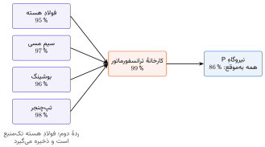
مثال 39.1 (۹۹ درصدِ کارخانه، ۸۶ درصدِ زنجیره) پرسش. کارخانه ۹۹٪ بهموقع تحویل میدهد و چهار زیرتأمینکنندهٔ بحرانیاش ۹۵، ۹۷، ۹۶ و ۹۸ درصد. احتمالِ آنکه همه بهموقع باشند چیست؟ (عددهای آموزشی.)
پاسخ. \(0.99 \times 0.95 \times 0.97 \times 0.96 \times 0.98 = 0.86\).
تفسیر. سابقهٔ خودِ کارخانه زنجیره را پنهان میکند. ممیزیِ توانمندی ردهٔ دوم را نقشه میکشد (بخش 39.5.3). قطعهٔ تکمنبعی که زمانِ تحویلِ بلند دارد، اینجا فولادِ هسته، یا ذخیره میگیرد یا منبعِ دوم. پیوستگیِ تأمین برای قطعههای یدکیِ سالهای بعد هم همین را میخواهد: سازندهای که خطِ تولیدِ یک بوشینگ را میبندد، اطلاعیهٔ پایانِ تولید میدهد و خریدِ پایانی را ممکن میکند. وارسی: حاصلضرب ۰٫۸۵۶ است.
- با شش بسته حداکثر چند رابط ممکن است؟
- چرا قراردادِ سازندهٔ توربین معمولاً جداست؟
- دو شرطِ «خریدن» را بنویسید.
- زنجیرهای با سه تأمینکنندهٔ ۹۸، ۹۷ و ۹۵ درصدی چقدر بهموقع است؟
- با قطعهٔ تکمنبعِ دیرتحویل چه میشود؟
- اطلاعیهٔ پایانِ تولید چه چیزی را ممکن میکند؟
پاسخها: (۱) ۱۵؛ (۲) طراحی، گواهیِ نوع و خدمتِ بلندمدت با اوست؛ (۳) مشخصه و تأمینکنندهٔ واجدِ شرایط، و داوری؛ (۴) 90 %؛ (۵) ذخیره یا منبعِ دوم؛ (۶) خریدِ پایانی.
39.2.4 راهبردِ تأمین در عدد
سه پرسشِ راهبردِ تأمین با عدد پاسخهای روشنتری میگیرند. سفارش را میانِ دو تأمینکننده تقسیم کنیم؟ سفارش را کِی ثبت کنیم؟ چه مقدار از قیمت به نرخِ ارز بسته است؟ احتمالها و پراکندگیها آموزشیاند (A-429).
برنامه:
python -m companion.ch39.examples_s39.2.4.1 یک تأمینکننده یا دو
one supplier or two for ten transformers (teaching chances)
one supplier fails to deliver: 0.100
two independent suppliers both fail: 0.010
two sharing one core-steel mill: 0.062
(the mill fails with 0.06; each supplier's own risk is
the rest of its 0.10)
splitting the order looks like a cure, but a shared
sub-supplier brings most of the risk back: map tier 2
before paying the premium of two smaller ordersمثال 39.2 (دو تأمینکننده، یک کارخانهٔ فولاد) پرسش. هر تأمینکننده با احتمالِ 0.10 تحویل نمیدهد. اگر ده ترانسفورماتور میانِ دو تأمینکننده تقسیم شود، احتمالِ اینکه هیچکدام تحویل ندهند چقدر است؟ اگر هر دو فولادِ هسته را از یک کارخانه بخرند چه؟
پاسخ. اگر دو تأمینکننده مستقل باشند، 0.010. اگر یک کارخانهٔ فولادِ مشترک داشته باشند که با احتمالِ 0.06 از کار میافتد، 0.062.
تفسیر. تقسیمِ سفارش ریسک را ده برابر کم میکند، اما فقط وقتی دو زنجیره واقعاً جدا باشند. زیرتأمینکنندهٔ مشترک بیشترِ ریسک را برمیگرداند: از 0.010 به 0.062، که به ریسکِ یک تأمینکنندهٔ تنها نزدیک است. دو سفارشِ کوچکتر گرانترند، چون تخفیفِ حجم و هزینهٔ آزمونِ نوعی تکرار میشوند. پس پیش از پرداختِ این هزینه، ردهٔ دوم نقشه میشود (بخش 39.2.3). وارسی: \(0.06 + 0.94 \times (0.04/0.94)^2 = 0.0617\).
39.2.4.2 زمانِ تحویل و تاریخِ سفارش
زمانِ تحویلِ ترانسفورماتور یک عدد نیست، یک توزیع است. اینجا توزیعِ لگنرمال با میانهٔ ۳۰ هفته و پراکندگیِ ۱۵ درصد فرض شده است. بسته ترانسفورماتورها را ۳۴ هفته پس از سفارش میخواهد.
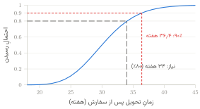
lead time of the transformers: median 30 weeks, spread 15 %
(lognormal); needed on site 34 weeks after the order
chance of arriving in time if ordered as planned: 80%
chance lead weeks order this much earlier
50% 30.0 0.0
80% 34.0 0.0
90% 36.4 2.4
95% 38.4 4.4
the four weeks between the median and the need buy only
an 80% chance; a 90 % chance means ordering 2.4 weeks
earlier - which the critical path of ch 38 must findایده. چهار هفته فاصلهٔ میانه تا نیاز فقط ۸۰ درصد شانسِ بهموقعرسیدن میخرد. برای ۹۰ درصد، سفارش باید ۲٫۴ هفته زودتر ثبت شود. این هفتهها از کجا میآیند؟ از مسیرِ بحرانیِ طراحی تا سفارش (بخش 38.6.7.5). کارهای بحرانی پیش از ثبتِ سفارش باید همین مقدار جلو بیفتند. بخشی از آن را میشود با شروعِ ارزیابیِ پیشنهادها پیش از نهاییشدنِ مطالعهٔ زمین به دست آورد، چون مطالعهٔ زمین شناوری دارد. تاریخِ سفارش از صدکِ ۹۰ تعیین میشود، نه از میانه.
39.2.4.3 ریسکِ ارز
currency exposure over the year to delivery (10 % spread)
offer price k u foreign 90 % adverse move k u
U-A 1,160 70% 104
U-B 1,010 20% 26
U-C 1,080 90% 125
the evaluated price of lesson D carries an 8 % allowance;
a 90 % adverse move is larger for U-C (90 % foreign);
a forward contract fixes the rate at a cost - a
treasury decision, named here as a concept onlyایده. قیمتِ ارزیابیشدهٔ درسِ ت برای سهمِ ارزی ۸ درصد اندوخته گذاشته است (بخش 39.5.2). یک حرکتِ نامطلوبِ ۹۰ درصدی در یک سال، با پراکندگیِ ۱۰ درصد، برای U-C حدودِ ۱۲۵ هزار واحد است، برای U-A ۱۰۴ و برای U-B ۲۶. سهمِ ارزیِ بیشتر قیمت را بیشتر به نرخِ ارز میسپارد. قراردادِ آتیِ ارز نرخ را با هزینهای ثابت میکند. این تصمیمی برای خزانهداریِ مالک است و اینجا فقط بهعنوانِ مفهوم آمده است. مهندسِ تدارکات فقط باید سهمِ ارزیِ هر پیشنهاد را روشن و سنجشپذیر به دست بدهد.
39.2.4.4 پیشصلاحیت: کفهایی که قیمت جبرانشان نمیکند
پیشصلاحیت پیش از مناقصه تعیین میکند چه کسی دعوت شود. هر متقاضی باید از چند کف بگذرد: نسبتِ جاری، شمارِ مرجعها، ظرفیتِ سالانه دستکم سه برابرِ سفارش، نظامِ کیفیت، و نرخِ حادثه زیرِ سقف (A-429).
FLOORS = dict(current_ratio=1.2, refs=3, cap_mva_y=3 * 56, iso9001=True)
CEILING = dict(hse_rate=2.0) # recordable rate per 200,000 hprequalification: floors that every bidder must meet
(current ratio, references, capacity of 3 x our order in
MVA a year, quality system, recordable injury rate)
U-A qualified
U-B qualified
U-C qualified
U-D out: current_ratio, iso9001
U-D is not invited to bid; U-B passes every floor by a
hair - the audit of lesson D later finds its process
control below the floor. Floors are pass/fail before any
price is opened: a low price cannot buy back a weak
balance sheet; U-C's small capacity is checked nextایده. کفها گذر یا ردند. پیش از بازشدنِ هیچ قیمتی اعمال میشوند، تا قیمتِ پایین نتواند ضعفِ مالی یا نبودِ نظامِ کیفیت را جبران کند. U-D دعوت نمیشود. U-B از همهٔ کفها بهزحمت میگذرد، و ممیزیِ درسِ ت بعدها نشان میدهد کنترلِ فرایندش زیرِ کف است (بخش 39.5.3). پیشصلاحیت جای ممیزی را نمیگیرد. فقط کسانی را کنار میگذارد که ممیزیشان ارزش ندارد.
39.2.4.5 بارِ کارخانه و انتظاری که میافزاید
کارخانهای که سفارشهای زیادی دارد، سفارشِ تازه را دیرتر شروع میکند. یک مدلِ صفِ ساده با یک خدمتدهنده نشان میدهد میانگینِ انتظار با بار چگونه رشد میکند: \(W = s\,\rho/(1-\rho)\). در این رابطه \(\rho\) سهمِ ظرفیتِ پرشده است و \(s\) زمانِ هر نوبتِ کار.
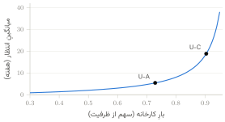
factory load with our order and the wait it adds
supplier capacity booked + ours load mean wait, weeks
U-A 900 656 73% 5.4
U-C 250 226 90% 18.8
a queue's wait grows as load/(1 - load): at 73 % it is
about 5 weeks, at 90 % three times that; a busy factory
is not a better one - the audit asks for its order bookایده. انتظار خطی نیست. در بارِ ۷۳ درصد حدودِ پنج هفته است و در ۹۰ درصد سه برابرِ آن. U-C با ظرفیتِ کوچک و سفارشهای ثبتشدهاش، پس از سفارشِ ما به ۹۰ درصد میرسد. اگر زمانِ تحویلِ پیشنهادیِ او این انتظار را در نظر نگرفته باشد، خوشبینانه است. کارخانهٔ پرکار لزوماً کارخانهٔ بهتری نیست. ممیزی دفترِ سفارشهای کارخانه را میخواهد (بخش 39.5.3) و زمانِ تحویل با آن سنجیده میشود.
39.2.4.6 زنجیرهٔ حمل تا ساختگاه
the transport chain from factory to site (days, simulated)
leg median 90 % minus median
factory to port 4 1.9
sea passage 24 5.1
port and customs 9 10.5
port to site (heavy haul) 5 3.3
whole chain: median 43 days, 90 % 55 days
the widest leg is port and customs: the buffer and the
document preparation go there, not to the sea passage;
the delivery term of the contract says where the risk
of loss passes from seller to buyer (concept only)ایده. پهنترین بخشِ زنجیره، بندر و ترخیص است، نه دریا. ده روز اضافه در صدکِ ۹۰ از همین بخش میآید. پس اندوختهٔ زمانی و آمادهکردنِ اسناد هم همینجا میروند: اسنادِ ترخیص پیش از رسیدنِ کشتی آماده میشوند و مجوزِ حملِ سنگین پیشاپیش گرفته میشود (فصل 31). شرطِ تحویلِ قرارداد میگوید ریسکِ از دست رفتن یا آسیبِ کالا در کدام نقطه از فروشنده به خریدار منتقل میشود. بیمهٔ حمل و بازرسیِ دریافت به همان نقطه بستهاند. اینجا فقط مفهوم آمده است. انتخابِ شرط با تیمِ قرارداد است.
- چرا تقسیمِ سفارش میانِ دو تأمینکننده همیشه ریسک را ده برابر کم نمیکند؟
- با احتمالِ 0.10 برای هر کدام، احتمالِ شکستِ دو تأمینکنندهٔ مستقل چقدر است؟
- چرا تاریخِ سفارش از صدکِ ۹۰ زمانِ تحویل تعیین میشود؟
- با میانهٔ ۳۰ هفته و نیازِ ۳۴ هفته، شانسِ بهموقعرسیدن چقدر است؟
- حرکتِ ۹۰ درصدیِ ارز برای کدام پیشنهاد بزرگتر است و چرا؟
- چرا کفهای پیشصلاحیت پیش از بازشدنِ قیمتها اعمال میشوند؟
- انتظار در بارِ ۹۰ درصد چند برابرِ انتظار در بارِ ۷۳ درصد است؟
- پهنترین بخشِ زنجیرهٔ حمل کدام است و اندوخته کجا میرود؟
39.3 ب. مشخصهٔ فنی و بازبینیِ پیشنهاد
مشخصهٔ فنی میگوید چه چیزی خریده میشود و پیشنهاد میگوید چه چیزی فروخته میشود. فاصلهٔ این دو جایی است که بیشترِ اختلافهای بعدی از آن میآید. دو گونه مشخصه هست. مشخصهٔ عملکردی میگوید جزء چه باید بکند، و طراحی با سازنده است. مشخصهٔ ساخت بر پایهٔ نقشه (به انگلیسی build-to-print) نقشهها را میدهد، و طراحی با خریدار است. مالکیتِ طراحی تعیین میکند خطای طراحی بر عهدهٔ کیست. ترانسفورماتورهای نیروگاهِ P با مشخصهٔ عملکردی خریده میشوند. اسکیدِ فولادیِ پایه با نقشه.
39.3.1 آنچه در بازبینیِ فنی وارسی میشود
technical review of an offer: what is checked (teaching)
design assumptions 45 C ambient, 1,000 m - as specified
standard editions power transformer parts quoted with years
deviations listed, each with a reason and a price
drawings outline, rating plate, foundation loads
calculations short-circuit withstand, temperature rise
material declarations fluid, core steel grade, paint
certificates type test report: which unit, which lab
test plan routine, type, witness points
spares, tools, training listed with prices and lead times
repair limits what can be repaired on site
life-cycle support years of spares and service
a type test report for another rating, an undated standard
or a deviation hidden in a footnote each turn a compliant
offer into one that is notایده. گزارشِ آزمونِ نوع برای یک رتبهٔ دیگر، استانداردِ بیویرایش، یا عدولی که در پانویس پنهان شده، هر کدام پیشنهادِ بهظاهر مطابق را نامطابق میکند. بازبینیِ فنی هر قلم را با مشخصه و با شاهد مقایسه میکند: فرضهای طراحی، ویرایشِ استانداردها، عدولها، نقشهها، محاسبهها، اعلامیههای مواد، گواهیها، طرحِ آزمون، قطعههای یدکی، ابزار، آموزش، محدودیتهای تعمیر و پشتیبانیِ طولِ عمر. ویرایشِ هر استانداردی که سازنده نام میبرد، با دفترِ استانداردهای پروژه مقایسه میشود. اگر نسخهٔ قدیمتری را نام برده باشد، این یک عدول است (فصل 2). خواستههای امنیتِ سایبری و دادهٔ تجهیزاتِ دارای نرمافزار هم در همین مرحله وارسی میشوند (بخش 36.7.1).
39.3.2 دادهٔ زیستمحیطیِ مقایسهپذیر
footprint of one 5.6 MVA unit, t CO2e, as offered (synthetic)
offer source boundary year uncertainty value
U-A EPD, verified cradle to gate 2024 +/- 10 % 41.0
U-B maker's declaration gate to gate 2019 not stated 8.0
U-C generic factor cradle to gate 2016 +/- 30 % 36.0
U-B looks lowest because its boundary leaves out the
materials; U-C's generic factor is old and wide. Only
U-A's verified declaration can be compared - and only with
another one on the same boundary and rules. None is a
guaranteed project result (ch 33, life-cycle data);
lesson J brings all three to one boundaryمثال 39.3 (کمترین عدد، کوتاهترین مرز) پرسش. سه پیشنهاد ردپای کربنِ یک ترانسفورماتور را دادهاند: ۴۱، ۸ و ۳۶ تن. کدام را میشود مقایسه کرد؟ (دادهٔ ساختگی.)
پاسخ. فقط U-A: اعلامیهٔ محیطیِ محصولِ وارسیشده، از گهواره تا دروازه، سالِ ۲۰۲۴، با عدمِ قطعیتِ ۱۰٪.
تفسیر. U-B کمترین عدد را دارد چون مرزش مواد را بیرون گذاشته است: از دروازه تا دروازه، فقط کارِ کارخانه. ضریبِ عمومیِ U-C کهنه و پهن است. مقایسه فقط میانِ دادههایی رواست که مرز، روش، منبع، سالِ داده و عدمِ قطعیتشان گفته شده و یکسان است (بخش 33.11.2). اعلامیهٔ وارسینشده یا ضریبِ عمومی هیچوقت نتیجهٔ تضمینشدهٔ پروژه نیست. اگر ردپا معیارِ ارزیابی باشد، مشخصه از پیش روش و مرز را تعیین میکند. وارسی: فقط یک ردیف «وارسیشده» است.
39.3.3 بازبینیِ فنی در عدد
سه وارسیِ بازبینیِ فنی را میشود با قاعدههای روشن انجام داد و نتیجه را ثبت کرد: آیا گزارشِ آزمونِ نوعیِ پیشنهادشده واحدِ ما را میپوشاند؟ کدام ویرایشِ استاندارد نقل شده است؟ پرسشهای روشنسازی سرِ وقت پاسخ گرفتهاند؟ قاعدهها آموزشیاند. قاعدهٔ واقعی از استاندارد و مشخصهٔ مالک میآید.
39.3.3.1 گزارشِ آزمونِ نوعی کدام واحد را میپوشاند؟
REPORTS = { # offer: the type-test report it submits
"U-A": dict(mva=5.6, hv_kv=33.0, um_kv=36.0, cooling="ONAN",
windings="Cu", design="T-56"),
"U-B": dict(mva=4.0, hv_kv=33.0, um_kv=36.0, cooling="ONAN",
windings="Al", design="T-40"),
"U-C": dict(mva=6.3, hv_kv=33.0, um_kv=36.0, cooling="ONAN",
windings="Cu", design="T-56"),
}
def applies(rep: dict, our: dict, band: float = 0.15) -> list[str]:
"""Reasons a type-test report does not cover our unit."""
out = []
if abs(rep["mva"] - our["mva"]) / our["mva"] > band:
out.append("rating outside +/- 15 %")
for k in ("um_kv", "cooling", "windings", "design"):
if rep[k] != our[k]:
out.append(f"different {k}")
return outdoes the offered type-test report cover the unit we buy?
(a teaching rule: same design family, insulation level,
cooling and winding material, rating within +/- 15 %)
U-A 5.6 MVA covers
U-B 4.0 MVA does not:
rating outside +/- 15 %, different windings, different design
U-C 6.3 MVA covers
U-C's 6.3 MVA report of the same design covers ours by
the rule; U-B's report is another design and material -
either a new type test (time, cost) or a deviation priced;
the real rule is the standard's and the owner's (STD-120)مثال 39.4 (گزارشِ واحدی دیگر) پرسش. هر سه پیشنهاد گزارشِ آزمونِ نوعی فرستادهاند. کدام گزارش واحدِ ۵٫۶ مگاولتآمپری را میپوشاند؟
پاسخ. گزارشِ U-A برای همین واحد است. گزارشِ ۶٫۳ مگاولتآمپریِ U-C از همان خانوادهٔ طراحی است و در بازهٔ ۱۵ درصد قرار میگیرد، پس با قاعدهٔ آموزشی میپوشاند. گزارشِ U-B برای یک واحدِ ۴ مگاولتآمپری با طراحی و جنسِ سیمپیچِ دیگری است و نمیپوشاند.
تفسیر. آزمونِ نوعی دربارهٔ یک طراحی است، نه یک برچسب. گزارشی که طراحی، سطحِ عایقی، سرمایش یا جنسِ سیمپیچیاش فرق دارد، چیزی دربارهٔ واحدِ ما ثابت نمیکند. دو راه میماند: آزمونِ نوعیِ تازه با زمان و هزینهاش، یا عدولی که قیمت میخورد (بخش 39.5.1). مرزِ دقیقِ «همان طراحی» را استاندارد و مشخصهٔ مالک تعیین میکنند (STD-120). قاعدهٔ ۱۵ درصدیِ اینجا فقط آموزشی است (A-429). وارسی: \((6.3 - 5.6)/5.6 = 12.5\,\%\)، کمتر از ۱۵ درصد.
39.3.3.2 ویرایشِ استانداردهای نقلشده
standards editions cited in the offers (register: STD-120,
IEC 60076-1:2011, edition 3.0)
U-A IEC 60076-1 edition 3.0 (2011)
matches the register
U-B IEC 60076-1, an earlier edition
superseded edition: a deviation until shown equal
U-C IEC 60076-1 (no edition given)
undated: ask which edition, record the answer
the specification names the edition it relies on; an
offer to another edition is checked clause by clause by
the engineer, not assumed to be the sameایده. مشخصه نام میبرد به کدام ویرایشِ هر استاندارد تکیه دارد، و دفترِ استانداردها همان را نگه میدارد. پیشنهادی که به ویرایشِ قدیمیتر ارجاع دهد، تا وقتی برابریاش بند به بند نشان داده نشده، یک عدول است. ارجاعِ بیتاریخ پرسشی است که باید پرسیده و پاسخش ثبت شود. هیچکدام را نباید «همان» فرض کرد. ویرایشها بندها، آزمونها و رواداریها را عوض میکنند.
39.3.3.3 دفترِ روشنسازیها
clarification log of the tender (answers due in 7 days)
U-A loss tolerance basis 3 days
U-B heat-run witness no answer price changes
U-B data schedule items 12 days price changes
U-C coating class proof 5 days
U-C sound level method 4 days
U-A monitoring relay link 6 days price changes
late or missing: 2; each is treated as stated in
the instructions to bidders - here, the least favourable
reading priced as a deviation; a clarification that
changes the price is recorded and applied to all biddersایده. هر پرسشِ روشنسازی موعدی دارد. پاسخِ دیرکرده یا پاسخنداده همانطور رفتار میشود که دستورالعملِ مناقصه گفته است. در اینجا یعنی نامطلوبترین خوانش، که بهعنوانِ عدول قیمت میخورد. روشنسازیای که قیمت را عوض کند ثبت میشود و برای همهٔ پیشنهاددهندگان یکسان اعمال میشود. این دفتر بخشی از سابقهٔ ارزیابی است. اگر روزی پرسیده شود چرا U-B کنار گذاشته شد، پاسخ در همین دفتر است.
- مشخصهٔ عملکردی و مشخصهٔ ساخت بر پایهٔ نقشه چه فرقی دارند؟
- مالکیتِ طراحی چه چیزی را تعیین میکند؟
- گزارشِ آزمونِ نوعِ یک رتبهٔ دیگر چه مشکلی دارد؟
- اگر سازنده ویرایشِ قدیمیترِ یک استاندارد را نام ببرد چه میشود؟
- پنج چیزی که دادهٔ زیستمحیطی باید بگوید کداماند؟
- چرا کمترین ردپا لزوماً بهترین نیست؟
- چرا گزارشِ آزمونِ نوعیِ U-B واحدِ ما را نمیپوشاند؟
- با ارجاعِ بیتاریخ به یک استاندارد چه میکنید؟
- پاسخِ دیرکردهٔ روشنسازی چگونه ارزیابی میشود؟
پاسخها: (۱) کارکرد در برابرِ نقشه؛ طراحی با سازنده یا خریدار؛ (۲) خطای طراحی بر عهدهٔ کیست؛ (۳) شاهدِ همان جزء نیست؛ (۴) عدول است؛ (۵) مرز، روش، منبع، سال، عدمِ قطعیت؛ (۶) ممکن است مرزش کوتاهتر باشد.
39.4 پ. کنترلهای تجاری و کیفیت
قرارداد میگوید اگر چیزی آنطور که قول داده شده نشود، چه میشود. این بخش ابزارهای آن را با عدد میسنجد: خسارتِ مقطوع برای تأخیر و سقفش، ارزشِ سالهای ضمانت، نقطههای شاهد در کارخانه، و راهِ رسمیِ پذیرشِ یک عدمانطباق. همه مفهوماند. متنِ قرارداد کارِ حقوقدانانِ طرفهاست.
39.4.1 خسارتِ مقطوعِ تأخیر و سقفِ آن
ایده. خسارتِ مقطوع (فصل 21) مبلغی از پیش توافقشده برای هر هفتهٔ تأخیر است، معمولاً درصدی از قیمتِ قرارداد، با یک سقف:
\[ D = \min\left(w \, r \, P,\; c\,P\right) \tag{39.2}\]
با \(w\) هفتهٔ تأخیر، \(r\) نرخِ هفتگی، \(P\) قیمت و \(c\) سهمِ سقف.
delay damages on the transformer order: 0.5 % a week, cap 10 % (teaching)
weeks late damages k u cap reached
2 11.6 no
8 46.4 no
20 116.0 yes
30 116.0 yes
a week of late PV costs the project about 145 k u (107 GWh/yr at 70 u/MWh);
the damages pay 5.8 k u a week and stop at 116 k u. They
are a pre-agreed estimate, not insurance: the schedule
float and the follow-up of the order protect the projectمثال 39.5 (خسارتی که هزینه را نمیپوشاند) پرسش. سفارشِ ترانسفورماتورها ۱٬۱۶۰ هزار واحد است، با نیم درصد در هفته و سقفِ ده درصد. خسارتِ هشت و بیست هفته تأخیر چقدر است؟ تأخیرِ بخشِ خورشیدی پروژه را در هفته چقدر هزینه دارد؟ (عددهای آموزشی.)
پاسخ. هشت هفته ۴۶٫۴ و بیست هفته ۱۱۶ هزار واحد، که همان سقف است. یک هفته تأخیرِ بخشِ خورشیدی حدودِ ۱۴۵ هزار واحد درآمد از دست میدهد: ۱۰۷ گیگاواتساعت در سال با ۷۰ واحد بر مگاواتساعت.
تفسیر. خسارت هفتهای ۵٫۸ هزار واحد میپردازد و پروژه هفتهای ۱۴۵ از دست میدهد. خسارتِ مقطوع یک برآوردِ از پیش توافقشده است، نه بیمه. چیزی که پروژه را حفظ میکند، شناورِ برنامه و پیگیریِ سفارش است: بازدید از کارخانه، وارسیِ پیشرفتِ تولید و نقشهٔ زیرتأمینکنندگان (بخش 39.2.3). وارسی: \(0.005 \times 1\,160 = 5.8\) و \(107\,426 \times 70/52 = 144.6\) هزار.
39.4.2 ضمانت و قطعههای یدکی در طولِ عمر
warranty years and spares, present value over 25 years (teaching)
offer warranty expected repairs after warranty, k u spares k u
U-A 5 42.6 30
U-B 2 56.1 18
U-C 3 51.3 24
U-A's longer warranty is worth 14 k u against U-B in repairs;
the bigger value is the evidence a warranty period
produces (early failures found while the maker pays)ایده. ضمانت (فصل 10) میگوید تا چند سال سازنده خرابی را به هزینهٔ خودش برطرف میکند. ارزشِ مستقیمِ سالهای ضمانت، ارزشِ کنونیِ تعمیرهایی است که در آن سالها از دوشِ مالک برداشته میشود. اینجا ضمانتِ پنجسالهٔ U-A در برابرِ دوسالهٔ U-B حدودِ ۱۴ هزار واحد میارزد. ارزشِ بزرگتر شاهدی است که دورهٔ ضمانت میسازد: خرابیهای زودرس وقتی پیدا میشوند که سازنده میپردازد (بخش 37.6.9). قطعههای یدکی با کد، قیمت و زمانِ تحویل در پیشنهاد میآیند، و تعهدِ سازنده به ساختِ آنها در سالهای عمر هم.
39.4.3 نقطههای شاهد و عدمانطباق
factory witness points of the transformer order (teaching)
test or step how why
heat run witnessed temperature rise, not just losses
loss measurement witnessed the guarantee is paid on it
applied voltage witnessed insulation
routine tests reports reviewed every unit
painting sample inspected thickness readings
a failed test makes a nonconformity: repaired and
retested, or accepted as is by a written concession with
a price or a longer warranty - never by silence (ch 40)ایده. نقطهٔ شاهد (فصل 8) آزمونی است که خریدار در آن حاضر میشود. آزمونِ گرما دما را ثابت میکند، نه فقط تلفات را. اندازهگیریِ تلفات مبنای پرداختِ تضمین است. آزمونی که رد شود یک عدمانطباق میسازد: یا تعمیر و آزمونِ دوباره، یا پذیرشِ همانطور که هست با یک امتیازِ کتبی (به انگلیسی concession) که قیمت یا ضمانتِ بلندتری کنارش میآید. هرگز با سکوت. فرایندهای کارخانه و برگههای آزمون در فصلِ ۴۰ میآیند (فصل 40). مرزِ پذیرشِ قرارداد هم همینجا تعریف میشود: پذیرشِ کارخانه، تحویل در ساختگاه، و پذیرشِ نهایی پس از راهاندازی، هر کدام با شاهدِ خودش.
39.4.4 تغییر، ادعا و سابقه
ایده. پس از امضا، هر تغییر در کار یک دستورِ تغییر است با قیمت و برنامه (بخش 38.6.4). هر طرفی که فکر میکند حقش ضایع شده یک ادعا میدهد، در مهلتی که قرارداد گفته، با شاهد. ادعایی که سابقه ندارد، مثلاً صورتجلسهٔ تأخیر یا نامهٔ اعلام یا عکسِ تاریخدار، تقریباً همیشه از دست میرود. پس ریسکِ سابقه یکی از ریسکهای اصلیِ تدارکات است، کنارِ ریسکِ ارز، حمل، رابط و مسئولیت. بخشِ ح این ریسکها را میانِ قراردادها کنار هم میگذارد (بخش 39.9).
- معادلهٔ 39.2 را توضیح دهید.
- قراردادی ۲٬۰۰۰ هزار واحدی با ۰٫۵٪ در هفته و سقفِ ۱۰٪. خسارتِ ۱۲ و ۳۰ هفته؟
- چرا خسارتِ مقطوع بیمه نیست؟
- ارزشِ بزرگترِ دورهٔ ضمانت چیست؟
- آزمونِ گرما چه چیزی را ثابت میکند که اندازهگیریِ تلفات نمیکند؟
- دو راهِ رفعِ یک عدمانطباق کداماند؟
- سه مرزِ پذیرشِ قرارداد را نام ببرید.
- ادعای بیسابقه چه سرنوشتی دارد؟
پاسخها: (۱) کمینهٔ نرخ ضربدر هفته ضربدر قیمت و سقف؛ (۲) ۱۲۰ و ۲۰۰ هزار واحد؛ (۳) پیشتوافق است و زیانِ واقعی را نمیپوشاند؛ (۴) شاهدِ خرابیهای زودرس به هزینهٔ سازنده؛ (۵) افزایشِ دما؛ (۶) تعمیر و آزمونِ دوباره، یا امتیازِ کتبی؛ (۷) کارخانه، ساختگاه، پذیرشِ نهایی؛ (۸) تقریباً همیشه از دست میرود.
39.4.5 کنترلهای تجاری در عدد
چهار درسِ دیگر کنترلهای تجاری را به عدد میبرند: آنچه مالک پیش از ساختِ کالا پرداخته است، ترانسفورماتورِ یدکی، هزینهٔ یک تأخیر و یک تغییر، و شمارِ آزمونهایی که باید دید. همهٔ مفهومهای قراردادی اینجا فقط برای فهمِ عددهاست و مشاورهٔ حقوقی نیست (A-429).
39.4.5.1 پرداختهای مرحلهای و آنچه در معرض است
مالک با هر مرحلهٔ پرداخت بخشی از قیمت را میپردازد. تأمینکننده هم کالا را کمکم میسازد. فاصلهٔ «پرداختشده» و «ارزشِ ساختهشده» مقداری است که اگر تأمینکننده در آن لحظه ورشکست شود، در معرضِ از دست رفتن است. ضمانتنامهٔ پیشپرداخت بخشی از این فاصله را میپوشاند.
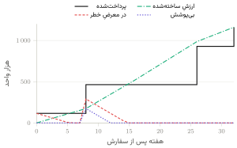
owner's exposure on the U-A order: paid minus value built
milestones:
week 0 10% order (advance)
week 8 30% drawings approved
week 26 40% FAT passed
week 32 20% delivered to site
peak exposure 290 k u in week 8 (just
after drawings are approved, before the core is built)
with an advance-payment guarantee of 10 % until FAT, the
uncovered peak is 174 k u in week 8
milestones paid ahead of value create exposure; securities
and milestone design reduce it - the instruments' wording
is for the lawyers and the banks (concept only)مثال 39.6 (سی درصد برای کاغذ) پرسش. بیشترین مقدارِ در معرضِ خطر کِی است؟ چگونه کم میشود؟
پاسخ. هفتهٔ ۸، با 290 هزار واحد، درست پس از تأییدِ نقشهها. در آن لحظه ۴۰ درصد پرداخت شده، اما ارزشِ ساختهشده ۱۵ درصد است. ضمانتنامهٔ پیشپرداختِ ۱۰ درصدی، بخشِ بیپوشش را به 174 هزار واحد میرساند.
تفسیر. مرحلهٔ «تأییدِ نقشهها» ۳۰ درصد میپردازد، در حالی که کار تا آن لحظه بیشتر روی کاغذ است. دو راه این فاصله را کم میکند. یکی طراحیِ مرحلهها نزدیک به ارزش است: پرداختی کوچکتر برای نقشهها و مرحلهای تازه برای ساختِ هسته. دیگری ضمانتنامهٔ حسنِ انجامِ کار یا ضمانتنامهای بزرگتر است. متنِ هر ضمانتنامه با حقوقدانها و بانکهاست. مهندس منحنی را میدهد که نشان میدهد چه مقدار و تا کِی پوشش لازم است. وارسی: \((0.40 - 0.15) \times 1160 = 290\).
39.4.5.2 ترانسفورماتورِ یدکیِ راهبردی
خرابیِ ترانسفورماتور کمیاب است و رخدادهای مستقل در زمان را قانونِ پواسون توصیف میکند. اگر \(n\) واحد هر کدام با نرخِ \(\lambda\) در سال خراب شوند، شمارِ خرابیها در بازهٔ \(T\) میانگینِ \(\mu = n\lambda T\) دارد و احتمالِ اینکه از \(k\) بیشتر نشود چنین است:
\[ P(N \le k) = \sum_{i=0}^{k} \frac{e^{-\mu}\,\mu^{i}}{i!}, \qquad \mu = n\,\lambda\,T \tag{39.3}\]
a strategic spare unit transformer? (teaching rates)
failures expected in a 30-week replacement lead: 0.058
chance of one or more in that window: 5.6%
failures expected over 25 years: 2.5
energy lost per failure without a spare: 389 k u (5 MW, CF 0.22, 30 weeks)
expected loss over life without a spare: 973 k u
one spare with storage and upkeep: about 136 k u
the spare pays if failures are as likely as assumed; it
also needs the same rating and vector group - one more
reason the ten units are identical (ch 38, C-017)ایده. در ۳۰ هفتهای که ساختِ یک ترانسفورماتورِ تازه طول میکشد، احتمالِ خرابیِ یکی از ده واحد فقط ۵٫۶ درصد است. اما در ۲۵ سال، ۲٫۵ خرابی انتظار میرود و هر کدام بییدکی حدودِ ۳۸۹ هزار واحد انرژی از دست میدهد. یک واحدِ یدکی با انبارداری و نگهداری حدودِ ۱۳۶ هزار واحد است، پس میارزد. این نتیجه به نرخِ خرابیِ فرضی بسته است (A-429) و با دادهٔ ناوگان در فصلِ ۵۲ دوباره سنجیده میشود. یک شرط هم دارد: یدکی باید با همهٔ ده واحد یکی باشد، یعنی همان توان، گروهِ برداری و امپدانس. این یکی دیگر از دلیلهای یکسانکردنِ واحدها با تغییرِ C-017 بود (بخش 38.5.4).
39.4.5.3 ادعای تأخیر و دستورِ تغییر در عدد
a delay claim and a change order, priced (concepts only)
owner's data six weeks late: prolongation 6 x 9.5 = 57 k u
disruption: productivity 1.00 -> 0.80 on 4,000 h: 1,000 h extra = 45 k u
change order C-022 (extra feeder) at contract unit rates: 86.4 k u
a claim stands on records: the late transmittal (ch 38),
the planned and actual productivity, the notice given in
time; without them it is an opinion. Entitlement is for
the contract and the lawyers - the engineer supplies the
facts and the arithmeticایده. ادعای تأخیر دو بخشِ رایج دارد. طولانیشدن هزینهٔ زمانیِ کارگاه است، یعنی هزینهٔ هفتگیِ ساختگاه ضرب در هفتههای تأخیر. اختلال کارِ اضافهای است که از افتِ بهرهوری میآید. سنجشِ آن با مقایسهٔ بهرهوریِ پیش و هنگامِ اختلال است. دستورِ تغییر با نرخهای واحدِ قرارداد قیمت میخورد. اینکه ادعا پذیرفته شود یا نه به قرارداد و حقوقدانها بسته است. مهندس دو چیز را فراهم میکند: واقعیتها و حساب. واقعیتها همان سوابقاند: ارسالنامهٔ دیرکرده (بخش 38.8.5)، بهرهوریِ برنامهریزیشده و واقعی، و اخطاری که سرِ وقت داده شد. ادعای بیسابقه فقط یک نظر است.
39.4.5.4 چند آزمونِ کارخانه را شاهد باشیم؟
اگر از \(N\) واحد، \(k\) واحد ایرادی سیستمی داشته باشند و \(n\) آزمون بهتصادف شاهد گرفته شود، احتمالِ دیدنِ دستکم یکی از آنها چنین است:
\[ P = 1 - \binom{N-k}{n} \Big/ \binom{N}{n} \tag{39.4}\]
how many of ten factory tests to witness?
witnessed chance to see at least one of 2 faulty units
1 20.0%
2 37.8%
3 53.3%
5 77.8%
10 100.0%
witnessing three gives about a half chance; the first
unit always (design faults show there), then a random two,
and every test report reviewed (lesson C, ch 38 sampling)ایده. شاهدبودنِ سه آزمون از ده آزمون فقط حدودِ نیمی از شانس را میدهد. پس برنامهٔ نقطههای شاهد سه بخش دارد. واحدِ اول همیشه شاهد گرفته میشود، چون ایرادِ طراحی آنجا خود را نشان میدهد. دو واحدِ دیگر بهتصادف انتخاب میشوند. گزارشِ آزمونِ همهٔ واحدها هم بازبینی میشود. این همان منطقِ وارسیِ نمونهای در فصلِ ۳۸ است (بخش 38.6.6)، این بار در کارخانهٔ تأمینکننده (بخش 39.4.3).
- مقدارِ در معرضِ خطر در هر هفته چگونه حساب میشود؟
- چرا بیشترین مقدار درست پس از تأییدِ نقشههاست؟
- معادلهٔ 39.3 را توضیح دهید. با ده واحد، نرخِ ۱ درصد و ۳۰ هفته، \(\mu\) چقدر است؟
- ترانسفورماتورِ یدکی چه شرطی برای کارکردن دارد؟
- طولانیشدن و اختلال را تعریف کنید.
- ادعا بر چه سوابقی میایستد؟
- با شاهدبودنِ دو آزمون از ده آزمون، شانسِ دیدنِ یکی از دو واحدِ معیوب چقدر است؟
39.5 ت. آزمایشگاهِ ارزیابیِ پیشنهادها
این آزمایشگاه مثالهای کارشدهٔ اصلیِ فصل را میآورد: سه پیشنهادِ ساختگی برای ده ترانسفورماتورِ واحدِ خورشیدی با یک ماتریسِ انطباق و عدول شفاف مقایسه میشوند. سپس قیمتِ ارزیابیشده با تلفاتِ سرمایهای، تحویل و ارز ساخته میشود. پروندههای توانمندیِ کارخانه با ریسکهای کیفیتِ پروژه سنجیده میشوند. جدولِ دادهٔ تأمینکننده وارسی میشود. و سرانجام توصیهٔ واگذاری از همهٔ اینها بیرون میآید.
پرونده: companion/ch39/lab_d.py
39.5.1 گامِ ۱: ماتریسِ انطباق و عدول
ایده. هر الزامِ مشخصه یک سطر است و هر پیشنهاد یک ستون: مطابق، با عدول، یا ارائهنشده. الزامهای بحرانی علامت دارند. عدول روی یک الزامِ بحرانی قیمتگذاری نمیشود. یا پیش از واگذاری رفع میشود، یا پیشنهاد پذیرفتنی نیست. عدول روی الزامِ غیربحرانی قیمت میگیرد و در قیمتِ ارزیابیشده مینشیند:
def compliance(answers: dict[str, str],
critical: set[str]) -> tuple[float, list]:
"""answers: requirement -> 'comply', 'deviate' or 'no'. Returns the
share fully complied and the critical requirements not complied."""
n = len(answers)
ok = sum(1 for a in answers.values() if a == "comply")
missed = sorted(r for r in critical if answers.get(r) != "comply")
return ok / n if n else 1.0, missed
def evaluated_price(price: float, deviations: float, loss_cost: float,
delay_weeks: float, ld_per_week: float,
foreign_share: float, fx_allowance: float) -> float:
"""Price used to compare offers (k u): the offer, the priced
deviations, the capitalised losses, the cost of a late delivery and an
allowance for the currency risk on the foreign share."""
return (price + deviations + loss_cost + delay_weeks * ld_per_week
+ price * foreign_share * fx_allowance)compliance and deviation matrix (C comply, D deviate, N not offered)
req critical U-A U-B U-C requirement
T07 yes C D C witness: heat run, losses, insulation
T08 C C D sound power level at the limit
T09 D C C ester fluid, fire point above 300 C
T11 C D C LV busbar for 8 cables per phase
T12 C C D tank and cooler coating class C4
T13 D C C monitoring relay, defined data link
T14 yes C N C data schedule per item I01-I14
T16 C N C warranty at least 3 years
U-A: full compliance 89 %; critical not met: none
U-B: full compliance 78 %; critical not met: T07, T14
U-C: full compliance 89 %; critical not met: none
a deviation on a critical item is not priced, it is
cleared or the offer is not acceptable; U-B offers no
witness of the heat run and no data schedule39.5.2 گامِ ۲: قیمتِ ارزیابیشده
ایده. قیمتِ ارزیابیشده پنج جزء دارد: قیمتِ پیشنهاد، عدولهای قیمتگذاریشده، تلفاتِ سرمایهای در عمرِ دستگاه (فصل 25)، هزینهٔ تأخیرِ تحویل نسبت به هفتهٔ نیاز، و اندوختهٔ ارز روی سهمِ خارجیِ قیمت:
\[ P_\text{eval} = P + \Delta_\text{dev} + 10\,(A\,P_0 + B\,P_k) + w_\text{late}\,r\,P + P\,f_\text{fx}\,a_\text{fx} \tag{39.5}\]
evaluated price, k u (losses at A 6.84, B 1.37 k u/kW; ch 25)
offer price deviations losses late delivery currency total
U-A 1,160 6 841 0 65 2,072
U-B 1,010 28 1,066 20 16 2,141
U-C 1,080 12 923 0 78 2,093
lowest price: U-B; lowest evaluated price: U-A
the losses over 25 years cost about as much as the units;
the cheapest offer is the most expensive to own. Late
delivery is priced at the delay damages it would cost the
project, currency at an allowance on the foreign share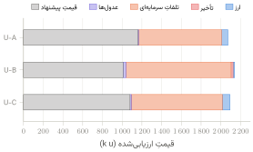
مثال 39.7 (ارزانترین پیشنهاد، گرانترین مالکیت (مثالِ کارشده)) پرسش. قیمتِ ارزیابیشدهٔ سه پیشنهاد را حساب کنید. ضریبهای تلفات از فصلِ ۲۵ است: \(A = 6.84\) و \(B = 1.37\) هزار واحد بر کیلووات. نیاز در هفتهٔ ۳۴ است، خسارت نیم درصد در هفته و اندوختهٔ ارز ۸٪. (پیشنهادهای ساختگی، A-425 تا A-427.)
پاسخ. U-A ۲٬۰۷۲، U-C ۲٬۰۹۳ و U-B ۲٬۱۴۱ هزار واحد. ارزانترین قیمت U-B است. کمترین قیمتِ ارزیابیشده U-A.
تفسیر. تلفاتِ ۲۵ ساله تقریباً هماندازهٔ خودِ دستگاهها هزینه دارد. U-B ۱۵۰ هزار واحد ارزانتر است و ۲۲۵ هزار واحد تلفاتِ بیشتر دارد. تأخیرِ چهارهفتهایاش هم ۲۰ هزار واحد میافزاید. U-C بیشترین سهمِ خارجی را دارد، و ریسکِ ارزش ۷۸ هزار واحد است. این ضریبها و اندوختهها پیش از گشودنِ پیشنهادها اعلام میشوند، تا ارزیابی شفاف و یکسان باشد. وارسی: \(1\,160 + 6 + 841 + 0 + 65 = 2\,072\).
39.5.3 گامِ ۳: پروندهٔ توانمندی و ممیزیِ کارخانه
ایده. ممیزیِ توانمندی کارخانه را در هشت قلم امتیاز میدهد: نظامِ کیفیت، کنترلِ فرایند، آزمایشگاهِ آزمون، ظرفیت، کنترلِ زیرتأمینکنندگان، ردیابی، کار و ایمنی، و سابقهٔ تحویل. سه قلم کفِ بحرانی دارند. امتیازِ زیرِ کف رد است، هر چه امتیازهای دیگر باشند:
def audit_score(scores: dict[str, float], weights: dict[str, float],
floors: dict[str, float]) -> tuple[float, list]:
"""Weighted score 0-5 and the items below their floor (a fail)."""
w = sum(weights.values())
s = sum(scores[k] * weights[k] for k in weights) / w
fails = sorted(k for k, f in floors.items() if scores.get(k, 0.0) < f)
return s, fails
def schedule_completeness(required: list[str],
delivered: dict[str, bool]) -> tuple:
"""delivered: item -> valid? Share delivered and valid, and what is
missing or invalid."""
good = [r for r in required if delivered.get(r) is True]
bad = [r for r in required if delivered.get(r) is not True]
return len(good) / len(required), bad
def interface_gaps(needs: dict[str, set[str]],
terms: dict[str, set[str]]) -> dict:
"""needs: contract -> topics it relies on another contract for;
terms: contract -> topics it covers. Returns the uncovered topics."""
covered = set().union(*terms.values()) if terms else set()
return {c: sorted(t - covered) for c, t in needs.items() if t - covered}factory capability audit, scores 0-5 with critical floors (A-426)
item weight U-A U-B U-C floor
quality system 2 4 3 4
process control 3 4 2 4 3.0
test laboratory 3 4 3 3 3.0
capacity 2 3 4 2
sub-supplier control 2 3 2 3
traceability 2 4 2 4
labour and HSE 2 4 3 3 3.0
delivery record 1 4 3 2
U-A: weighted 3.76; below a floor: none
U-B: weighted 2.71; below a floor: process control
U-C: weighted 3.24; below a floor: none
a weighted score hides a weak critical process; the floor
makes it a fail whatever the other scores. U-C's low
capacity score is a delivery risk to watch, not a failمثال 39.8 (پروندهٔ توانمندی در برابرِ ریسکهای کیفیت) پرسش. کدام ریسکهای کیفیتِ پروژه را ممیزی پوشش میدهد و کدام کارخانه رد میشود؟ (ممیزیِ ساختگی، A-426.)
پاسخ. U-B با کنترلِ فرایندِ ۲ رد میشود. U-A ۳٫۷۶ و U-C ۳٫۲۴ امتیاز دارند.
تفسیر. بزرگترین ریسکهای کیفیتِ ترانسفورماتور خشککردنِ عایق، فشردگیِ سیمپیچ و آزمونِ گرماست. اینها در کنترلِ فرایند و آزمایشگاه دیده میشوند. میانگینِ وزنی ضعفِ یک فرایندِ بحرانی را پنهان میکند. کف آن را به رد تبدیل میکند. امتیازِ ظرفیتِ پایینِ U-C رد نیست، ریسکِ تحویل است که پیگیری میشود. امتیازها از شاهد میآیند: بازدید، سابقههای تولید، گزارشهای آزمون. ادعای فروشنده امتیاز نمیگیرد. وارسی: میانگینِ وزنیِ U-A \(64/17 = 3.76\) است.
39.5.4 گامِ ۴: جدولِ دادهٔ تأمینکننده
supplier data schedule: 14 items committed and valid
offer share missing or not valid
U-A 93 % I13
U-B 57 % I09, I10, I11, I12, I13, I14
U-C 86 % I12, I14
a delivery defined as 'documents' would accept all three;
defined as data items with a schema, an update duty and
the right to use them, none meets it in full - U-A lacks
only the update duty, which is negotiated before awardایده. همراهِ تجهیزات، داده هم خریده میشود: شناسه و شمارهٔ سریال، برگهٔ داده، فهرستِ مواد، نقشهها و مدلها، گزارشهای آزمون، کالیبراسیون، ضمانتنامه، برنامهٔ نگهداری، فهرستِ یدکی، دادهٔ ایمنی و محیطی، داده در طرحوارهٔ مالک، تعهدِ بهروزرسانی، و حقِ استفاده. فصلِ ۳۸ همینها را بهصورتِ الزامهای اطلاعاتی نوشت (بخش 38.8.2). تحویلی که فقط «شمارِ سندها» را بشمارد هر سه را میپذیرد. تحویلی که اقلامِ داده را با طرحواره، تعهدِ بهروزرسانی و حق میشمارد، هیچکدام را کامل نمیپذیرد. U-A فقط تعهدِ بهروزرسانی را ندارد و آن پیش از واگذاری گفتوگو میشود.
39.5.5 گامِ ۵: توصیهٔ واگذاری
award recommendation for the PV unit transformers (A-428)
U-A: evaluated 2,072 k u; acceptable
U-B: evaluated 2,141 k u; not acceptable - T07, T14, process control
U-C: evaluated 2,093 k u; acceptable
recommended: U-A, lowest evaluated price among acceptable offers,
21 k u (1 %) below the next - a margin inside
the uncertainty of the loss evaluation; the audit (3.76
against 3.24) and the data schedule decide it as well
conditions: close U-A's two deviations (fluid, monitoring
interface) and its data update duty before signature;
the recommendation is the procurement team's; the award
is the owner's decisionمثال 39.9 (توصیه با شرط (مثالِ کارشده)) پرسش. با ماتریسِ انطباق، قیمتِ ارزیابیشده، ممیزی و جدولِ داده، کدام پیشنهاد توصیه میشود؟ با چه شرطهایی؟
پاسخ. U-A، با کمترین قیمتِ ارزیابیشده میانِ پیشنهادهای پذیرفتنی. شرطها: رفعِ دو عدولِ مایعِ عایق و رابطِ رلهٔ پایش، و تعهدِ بهروزرسانیِ داده، پیش از امضا.
تفسیر. فاصلهٔ U-A و U-C فقط ۲۱ هزار واحد است، حدودِ ۱٪، که در عدمِ قطعیتِ ارزیابیِ تلفات جا میشود. ممیزیِ بهتر (3.76 در برابرِ 3.24) و جدولِ دادهٔ کاملتر هم آن را تأیید میکنند. توصیه کارِ تیمِ تدارکات است. واگذاری تصمیمِ مالک است. گزارشِ توصیه همهٔ عددها، شرطها و ریسکهای باقیمانده را با هم میآورد. وارسی: \(2\,093 - 2\,072 = 21\).
- چرا عدول روی الزامِ بحرانی قیمتگذاری نمیشود؟
- پنج جزءِ قیمتِ ارزیابیشده را بنویسید.
- تلفاتِ سرمایهایِ یک دستگاه با \(P_0 = 5\,\text{kW}\) و \(P_k = 50\,\text{kW}\) چقدر است؟
- چرا ضریبها پیش از گشودنِ پیشنهادها اعلام میشوند؟
- کفِ بحرانی در ممیزی چه کاری میکند؟
- تحویلِ «شمارِ سندها» چه اشکالی دارد؟
- وقتی فاصلهٔ دو پیشنهاد ۱٪ است، چه چیزی تصمیم را میسازد؟
- توصیه و واگذاری با کیست؟
پاسخها: (۱) رفع یا رد میشود؛ (۲) قیمت، عدولها، تلفات، تأخیر، ارز؛ (۳) \(6.84 \times 5 + 1.37 \times 50 = 102.7\) هزار واحد؛ (۴) تا ارزیابی شفاف و یکسان باشد؛ (۵) ضعفِ بحرانی را رد میکند؛ (۶) دادهٔ قابلِ استفاده را نمیسنجد؛ (۷) ممیزی و داده؛ (۸) توصیه با تدارکات، واگذاری با مالک.
39.5.6 گامِ ۶: قیمتِ انرژی و پایداریِ رتبه
قیمتِ ارزیابیشده با یک قیمتِ انرژی ساخته شد: ۷۰ واحد بر مگاواتساعت، که تلفات را به پول برمیگرداند (بخش 39.5.2). اگر آن عدد عوض شود، رتبه هم ممکن است عوض شود. توصیهٔ واگذاری باید بگوید رتبه تا کجا پایدار است. این کار با محاسبهٔ دوبارهٔ همان قیمتِ ارزیابیشده برای بازهای از قیمتهای انرژی انجام میشود، با همان فرمولِ آزمایشگاه.
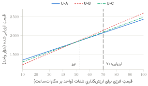
evaluated price against the energy price that values losses
energy u/MWh U-A U-B U-C (k u, ten units)
20 1,471 1,379 1,433
40 1,711 1,684 1,697
70 2,072 2,141 2,093
100 2,432 2,598 2,488
U-C undercuts U-A below 52 u/MWh, U-B below 49 u/MWh
U-B fails critical items whatever the price (lesson D);
the flip that matters is U-C at 52 u/MWh, 25% under the
70 used: the recommendation says it holds above that
value and asks whether the offtake price (ch 21) makes a
lower one credible - a flip is reported, not hiddenمثال 39.10 (پنجاهودو، نه هفتاد) پرسش. زیرِ چه قیمتی از انرژی رتبهٔ اول عوض میشود؟ کدام جابهجایی مهم است؟
پاسخ. U-C زیرِ ۵۲ واحد بر مگاواتساعت و U-B زیرِ ۴۹ واحد بر مگاواتساعت از U-A ارزانتر میشوند. فقط جابهجاییِ U-C مهم است، چون U-B در هر قیمتی الزامهای بحرانی را برآورده نمیکند (بخش 39.5.5).
تفسیر. پیشنهادِ کمتلفاتتر وقتی میبَرَد که انرژی گران باشد. ۵۲ واحد بر مگاواتساعت حدودِ ۲۵ درصد زیرِ عددِ ارزیابی است. اگر قیمتِ قراردادِ فروشِ برق یا بازارِ پس از آن چنین عددی را باورپذیر کند (فصل 21)، توصیه باید بگوید «U-A، به شرطِ اینکه ارزشِ انرژی بالای ۵۲ بماند». ارزیابیای که فقط یک قیمت را نشان دهد، تصمیمگیرنده را از این شرط بیخبر میگذارد. وارسی: در ۷۰ واحد، 2,072 در برابرِ 2,093، همان عددهای بخش 39.5.2.
39.6 ث. الزامهای قابلیتِ اطمینان و خدمت
هدفِ دسترسپذیریِ نیروگاه در هیچ قراردادی بهتنهایی نمینشیند. باید به سهمهایی تقسیم شود که هر تأمینکننده بتواند بپذیرد، بسنجد و گزارش دهد. این بخش هدف را میانِ اجزای یک بلوکِ خورشیدی تقسیم میکند، نشان میدهد زمانِ پاسخ و تعمیر کدام سهم را برآورده میکند، و تضمینِ دسترسپذیری را با شانس میسنجد.
39.6.1 تقسیمِ هدفِ دسترسپذیری
ایده. چهار جزء پشتِ سرِ هم یک بلوکِ خورشیدی را میسازند: اینورتر، ترانسفورماتورِ واحد، کلیدِ فشارمتوسط و پیوندِ اسکادا. دسترسپذیریِ بلوک حاصلضربِ آنهاست. تقسیمِ برابر به هر جزء \(A_\text{t}^{1/n}\) میدهد. تقسیمِ وزنی به جزئی که قطعههای بیشتر و تعمیرِ کوتاهتر دارد، سهمِ گشادتری میدهد:
\[ A_\text{block} = \prod_{i=1}^{n} A_i \ge A_\text{t} \tag{39.6}\]
PV block availability target 97 %, four parts in series
equal share each: 99.24 %
a weighted split instead (teaching):
inverter 98.00 %
unit transformer 99.80 %
MV switchgear 99.70 %
SCADA link 99.50 %
product 97.02 % - meets the target
the inverter gets the loosest share because it has the
most parts and the shortest repairs; each share becomes
a supplier requirement with its measurement (ch 37)ایده. هر سهم یک الزامِ تأمینکننده میشود، با تعریفِ سنجش، پنجرهٔ گزارش و استثناها، همانطور که فصلِ ۳۷ نشان داد (بخش 37.2.2). تأمینکننده دادهٔ خرابی و شاهدِ نگهداشتپذیری میدهد: نرخهای خرابی با زمانِ در معرض، زمانهای تعمیرِ اندازهگیریشده، و دسترسی برای تعویضِ قطعهها (بخش 37.6.6). تعهدِ گزارشِ رویدادها و پشتیبانی در برابرِ منسوخ شدنِ قطعهها هم در قرارداد میآید.
39.6.2 زمانِ پاسخ و تعمیر
inverter availability from failure and repair times (teaching)
response h repair h availability meets 98.0 %?
72 24 95.42 % NO
48 12 97.09 % NO
24 8 98.43 % yes
8 4 99.40 % yes
the response time - spares, travel, access - matters more
than the repair itself; the service contract states both,
with the spares held on site that make them possible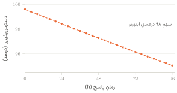
مثال 39.11 (پاسخِ ۲۴ ساعته، نه ۷۲ ساعته) پرسش. اسکیدی با میانگینِ ۲٬۰۰۰ ساعت میانِ خرابیها باید ۹۸٪ در دسترس باشد. با پاسخِ ۷۲ ساعته و تعمیرِ ۲۴ ساعته به سهم میرسد؟ با ۲۴ و ۸ ساعت چه؟ (عددهای آموزشی.)
پاسخ. \(2\,000/2\,096 = 95.42\,\%\)، نه. \(2\,000/2\,032 = 98.43\,\%\)، بله.
تفسیر. زمانِ پاسخ، یعنی قطعه و سفر و دسترسی، بیش از خودِ تعمیر وزن دارد (بخش 37.7.5). قراردادِ خدمت هر دو را میگوید، و قطعههای یدکیِ نگهداشتهشده در ساختگاه را که آنها را ممکن میکنند. پاسخِ ۲۴ ساعته بیانبارِ ساختگاه فقط روی کاغذ است. وارسی: شکلِ شکل 39.7 خطِ ۹۸٪ را حدودِ ۳۲ ساعت قطع میکند.
39.6.3 تضمین در برابرِ شانس
an availability guarantee for the 12 turbines and their real spread
(ch 37: the same fleet missed 98.5 % in 37 % of years by chance)
guarantee years missed by chance bonus/penalty design
98.5 % 37.2 % band of +/- 0.5 %
98.3 % 7.2 % one-sided penalty
98.0 % 0.0 % one-sided penalty
a guarantee is a promise to pay, measured one way, over a
period; it is not evidence that the plant reaches the
figure - the monitoring of ch 37 isایده. فصلِ ۳۷ نشان داد ناوگانی که هیچ کارِ اشتباهی نمیکند، تضمینِ نزدیکِ میانگین را در ۳۷٪ سالها از دست میدهد (بخش 37.7.8). تضمین قولی برای پرداخت است، به یک روش سنجیده میشود، و در یک دوره. شاهدِ آن نیست که نیروگاه به آن عدد میرسد. پایشِ فصلِ ۳۷ شاهد است. طراحیِ تضمین، یعنی سطح، دوره، نواری برای پاداش و جریمه، و استثناها، با همین پراکندگی جلوی چشم انجام میشود.
39.6.4 سهمِ هر جزء بر پایهٔ وزنِ ازکارافتادگی
تقسیمِ برابرِ هدف میانِ اجزا ساده است، اما از هر تأمینکننده چیزی میخواهد که ربطی به جزءِ او ندارد. راهِ دیگر این است که بودجهٔ ازکارافتادگیِ سالانه به نسبتِ ازکارافتادگیِ موردِ انتظارِ هر جزء تقسیم شود. ازکارافتادگیِ موردِ انتظار شمارِ خرابیها در سال ضرب در میانگینِ ساعتهای هر خرابی است (A-429).
برنامه:
python -m companion.ch39.examples_tPV block target 97%: 263 h a year of downtime to share
part expected h share of budget allowed h
inverter 48.0 58.3% 153.1
unit transformer 20.0 24.3% 63.8
MV switchgear 2.4 2.9% 7.7
SCADA link 12.0 14.6% 38.3
expected downtime 82 h: inside the budget, with 180 h margin
an equal split (lesson E) would give the transformer 66 h
and the SCADA link 66 h; weighting by expected downtime
asks each supplier for what its part can deliver, and the
transformer's rare, long outage is covered by the spareایده. اینورتر بیشترین ازکارافتادگی را دارد و بیشترین سهم را میگیرد. ترانسفورماتور بهندرت خراب میشود، اما هر خرابیاش طولانی است. میانگینِ ۲۰ ساعت در سال یعنی یک خرابیِ دوهزارساعته در هر صد سالِ کارِ یک واحد. این ریسک با سهمِ بودجه پوشانده نمیشود. با واحدِ یدکی پوشانده میشود (بخش 39.4.5.2). تقسیمِ وزنی از هر تأمینکننده چیزی را میخواهد که جزءِ او میتواند بدهد. حاشیهٔ ۱۸۰ ساعته هم برای رویدادهایی میماند که هیچ جزئی مالکشان نیست.
39.6.5 یک سالِ ازکارافتادگی، دو هزار بار
میانگینِ ازکارافتادگی به کارِ قرارداد نمیآید. قرارداد باید سالهای بد را هم بپوشاند. شبیهسازی دو هزار سال را برای خرابیهای اینورتر میسازد. شمارِ خرابیها از توزیعِ پواسون میآید و زمانِ پاسخ، رسیدنِ قطعه و تعمیر هر کدام لگنرمالاند. دو حالت مقایسه میشوند: قطعهٔ یدکی در ساختگاه، و قطعه در انبارِ مرکزی.
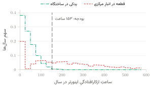
inverter downtime a year, 2,000 simulated years
case mean h 90 % h chance over budget
spares on site 41.9 90.9 0.9%
spares at depot 221.5 484.8 57.0%
budget 153 h (the weighted share above): with
stock on site the bad years stay inside it; with parts at
a depot even the average year misses it. The contract
asks for response, repair and stock on site, not only
for an availability figureمثال 39.12 (قطعه در ساختگاه، نه در انبار) پرسش. بودجهٔ اینورتر ۱۵۳ ساعت در سال است. با هر کدام از دو حالت، چند درصد از سالها از بودجه بیشتر میشوند؟
پاسخ. با یدکی در ساختگاه ۰٫۹ درصد. با قطعه در انبارِ مرکزی ۵۷ درصد. در حالتِ دوم حتی میانگین (۲۲۲ ساعت) از بودجه بیشتر است.
تفسیر. زمانِ رسیدنِ قطعه بیشترِ ازکارافتادگی را میسازد (بخش 39.6.2). پس قرارداد سه چیز را جدا میخواهد: زمانِ پاسخ، زمانِ تعمیر، و فهرستِ قطعههایی که در ساختگاه نگه داشته میشوند. تأمینکنندهای که فقط یک عددِ دسترسپذیری را تضمین کند، میتواند با انبارِ مرکزی در بیشترِ سالها آن را از دست بدهد و خسارتِ مقطوع بپردازد. چنین قراردادی نیروگاه را در دسترس نگه نمیدارد. وارسی: میانگینِ لگنرمال از میانه بزرگتر است: \(18\,e^{0.5^2/2} = 20.4\) و \(6\,e^{0.4^2/2} = 6.5\). پس حالتِ اول حدودِ \(1.6 \times (20.4 + 6.5) = 43\) ساعت میدهد، نزدیکِ ۴۱٫۹ ساعتِ شبیهسازی.
39.6.6 خریدِ پایانِ تولید
last-time buy of inverter control boards (end of production)
60 boards in service, 2% fail a year, 20 years left
expected failures: 24; to cover them with 95 %: 32 boards
buying only the mean (24) runs short 45% of the time
the obsolescence clause of lesson E gives the notice that
makes this purchase possible; storage and testing of the
stock are part of its costایده. سازنده پایانِ تولیدِ یک برد را اعلام میکند. خریدِ پایانِ تولید آخرین فرصت برای خریدنِ یدکیِ همهٔ عمرِ باقیمانده است. با معادلهٔ 39.3، میانگینِ خرابیها در ۲۰ سال ۲۴ برد است. برای ۹۵ درصد اطمینان ۳۲ برد لازم است. خریدنِ همان میانگین، در ۴۵ درصدِ حالتها کم میآورد. بندِ منسوخشدن در قرارداد اعلامِ پیشاپیش را تضمین میکند، و همین اعلام است که این خرید را ممکن میکند (بخش 39.6). انبارداری و آزمونِ دورهایِ این بردها هم بخشی از هزینهٔ آن است.
39.6.7 موجودیِ یدکی در ساختگاه
شبیهسازیِ بالا نشان داد قطعه در ساختگاه سالهای بد را درونِ بودجه نگه میدارد (مثال 39.12). اما چند قطعه؟ با معادلهٔ 39.3، شمارِ خرابیها در زمانِ جایگزینیِ موجودی میانگینِ \(\mu = n\lambda T\) دارد. موجودیِ \(k\) قطعه وقتی کم نمیآورد که خرابیها از \(k\) بیشتر نشوند.
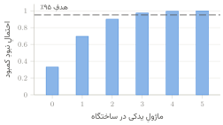
on-site stock of inverter power modules (60 in service)
failures a year 8% each; restock lead 12 weeks: mean demand 1.11
stock chance of no stock-out holding k u
0 33.0% 0
1 69.6% 8
2 89.9% 16
3 97.4% 24
4 99.4% 32
5 99.9% 40
three modules give 97 %; a stock-out derates a block by a
quarter for half a lead time on average (~19 k u)
the stock level is a service requirement in the contract
(lesson E), checked at each restock, not a hopeایده. با ۶۰ ماژول در کار، نرخِ خرابیِ ۸ درصد در سال و ۱۲ هفته زمانِ جایگزینی، میانگینِ تقاضا 1.11 ماژول است. یک ماژولِ یدکی فقط ۷۰ درصد شانسِ نبودِ کمبود میدهد و دو ماژول ۹۰ درصد. سه ماژول با ۲۴ هزار واحد هزینهٔ نگهداری به ۹۷ درصد میرسد. هر کمبود یک بلوک را بهطورِ میانگین برای نیمی از زمانِ جایگزینی یکچهارم کمتوان میکند، که حدودِ ۱۹ هزار واحد است. پس سطحِ موجودی یک الزامِ خدمت در قرارداد میشود: سه ماژول در ساختگاه، و پر کردنِ دوباره پس از هر برداشت. این عدد در هر بار پر کردن وارسی میشود، نه اینکه فقط به آن امید بسته شود (بخش 39.6.2).
- تقسیمِ وزنیِ بودجهٔ ازکارافتادگی چه برتریای بر تقسیمِ برابر دارد؟
- چرا ریسکِ ترانسفورماتور با سهمِ بودجه پوشانده نمیشود؟
- چرا شبیهسازی بهجای میانگین به کار میرود؟
- کدام بخشِ زمانِ ازکارافتادگی با انبارِ مرکزی بزرگ میشود؟
- خریدِ پایانِ تولید با ۹۵ درصد اطمینان برای میانگینِ ۲۴ خرابی چند برد است؟
- با میانگینِ تقاضای 1.11، سه ماژولِ یدکی چه شانسی برای نبودِ کمبود میدهند؟
39.7 ج. کارهای اتصال و رابطِ بستهها
connection works: who builds, owns and maintains (teaching split)
item responsible note
line route, land, permits plant operator approves
132 kV line plant handed over after tests
grid bay at the substation grid operator plant pays via offer
protection at both line ends both agreed together
revenue metering grid operator plant gives space
outage for the bay works grid operator plant plans around it
maintenance of the line grid operator after handover
each line names the boundary of design, construction,
ownership and warranty; an item built by the plant and
transferred to the operator needs acceptance tests both
agree before construction (ch 28, ch 38)ایده. کارهای اتصال به شبکه میانِ نیروگاه، بهرهبردارِ شبکه و گاهی طرفهای دیگر تقسیم میشوند. برای هر قلم، مرزِ طراحی، ساخت، مالکیت و ضمانت گفته میشود. خطی که نیروگاه میسازد و به بهرهبردار میسپارد، آزمونهای پذیرشی لازم دارد که هر دو طرف پیش از ساخت بر آن توافق کردهاند (فصل 28، بخش 38.7). خاموشیِ بیها را بهرهبردار برنامهریزی میکند و نیروگاه کارش را دورِ آن. نگهداریِ بلندمدتِ داراییهای صادرات، پس از سپردن، با بهرهبردار است. ضمانتهای سازندگان باید به مالکِ تازه منتقلشدنی باشند. اینها همه در جدولِ رابطِ فنی فصلِ ۳۸ با مالک و تاریخ ثبت میشوند.
39.7.1 پنجرههای قطعِ شبکه
outage windows for the connection works (days)
need 3 33 kV bay at the utility substation
need 2 line crossing under the 132 kV
need 2 protection tests end to end
offered: Mar 6, Apr 6, Oct 5, Nov 5
needed 7 days in sequence (tests come last); offered 22,
but no window is longer than 6 days: the works take
March and April together, and a week's slip at the bay
sends the end-to-end tests to October - six months. The
works plan is fixed with the grid operator before the
contracts are signed (ch 28)ایده. کارهای اتصال به پنجرههای قطعِ شبکه نیاز دارند، و این پنجرهها را بهرهبردارِ شبکه میدهد، نه پروژه. هفت روزِ پشتِ سرِ هم لازم است: آزمونِ سرتاسریِ حفاظت پس از دو کارِ دیگر میآید. هیچ پنجرهای بیشتر از شش روز نیست. پس کارها مارس و آوریل را با هم لازم دارند. اگر کارِ جایگاه یک هفته عقب بیفتد، آزمونها به اکتبر میروند، یعنی شش ماه بعد. پس برنامهٔ کارهای اتصال پیش از امضای قراردادها با بهرهبردارِ شبکه بسته میشود (فصل 28). در قراردادِ پیمانکار هم پنجرهها تاریخِ کلیدیاند، نه برآورد.
39.8 چ. بررسیِ دقیقِ حقوقِ کار و حقوقِ بشر
labour due-diligence screen of suppliers (synthetic, A-430)
party tier risk evidence status
U-A factory 1 low audit + interviews verified
U-A core steel 2 medium declaration claimed only
U-B factory 1 medium declaration claimed only
U-B copper winding wire 2 high none unknown
U-C factory 1 low audit verified
U-C bushings 2 medium declaration claimed only
site contractor 1 medium audit + interviews verified
a high risk with no evidence (U-B's winding wire) is not a
finding of abuse - it is a gap: the supplier is asked to
map the source and allow an audit, with a remedy plan if
problems are found; a declaration is recorded as a claim,
never as a verified result. Workers of the site contractor
get the project's grievance channel (ch 33)مثال 39.13 (ادعا، شاهد و شکاف) پرسش. غربالِ کارِ هفت تأمینکننده و زیرتأمینکننده چه میگوید؟ با سیمِ مسیِ U-B که ریسکِ بالا و هیچ شاهدی ندارد چه میشود؟ (غربالِ ساختگی، A-430.)
پاسخ. سه طرف با ممیزی وارسی شدهاند. سه طرف فقط اعلامیه دادهاند. یک طرف، سیمِ مسیِ U-B، ریسکِ بالا و هیچ شاهدی دارد.
تفسیر. ریسکِ بالای بیشاهد یافتهٔ سوءرفتار نیست. یک شکاف است. از تأمینکننده خواسته میشود منبع را نقشه کند و اجازهٔ ممیزی بدهد، با برنامهٔ اصلاح اگر مشکلی پیدا شود، و راهِ تشدید اگر همکاری نکند. اعلامیه بهعنوانِ ادعا ثبت میشود و هرگز بهعنوانِ نتیجهٔ وارسیشده. ادعای خاستگاه یا انطباق بیشاهد در گزارش نمیآید. کارگرانِ پیمانکارِ ساختگاه به سازوکارِ شکایتِ پروژه دسترسی دارند (فصل 33). بررسی متناسب است: ژرفای آن از ریسک میآید، و حدودِ ردیابی صادقانه گفته میشود. قانونِ کشور و تعهدهای پروژه و وامدهنده چارچوب را میگذارند (فصل 22، فصل 55). وارسی: امتیازِ ریسکِ سیمِ مسی \(2 + 2 + 2 + 1 = 7\) است.
39.8.1 چند کارگاه را ممیزی کنیم؟
اگر سهمِ \(p\) از کارگاههای تأمینکنندگان مشکلی داشته باشند، برای اینکه با اطمینانِ \(c\) دستکم یکی از آنها پیدا شود، این شمار کارگاه باید ممیزی شود:
\[ n = \left\lceil \frac{\ln(1 - c)}{\ln(1 - p)} \right\rceil \tag{39.7}\]
how many supplier sites to audit (90 % to find one, if any)
share of sites with a problem sites to audit
30% 7
20% 11
10% 22
5% 45
a timesheet sample at one sub-supplier: 9 of 120 weeks
over 60 hours = 7.5% (90 % interval 4.4% to 12.5%)
the finding is the sample and its interval - a verified
fact for the remediation plan, kept apart from the
supplier's declaration that 'no one works overtime'مثال 39.14 (نمونه با بازه، نه اعلامیه) پرسش. زیرتأمینکنندهای اعلام کرده است «هیچکس اضافهکار نمیکند». از ۱۲۰ هفتهٔ کاریِ نمونه، ۹ هفته بیش از ۶۰ ساعت است. یافته چیست؟
پاسخ. 7.5 % از هفتهها، با بازهٔ ۹۰ درصدیِ 4.4 % تا 12.5 %.
تفسیر. یافته همین نمونه و بازهٔ آن است. نمیگوید «همه» و نمیگوید «هیچکس»، و ادعای تأمینکننده را هم نه تأیید میکند و نه کنار میگذارد. ادعا جدا ثبت میشود و یافتهٔ وارسیشده جدا (مثال 39.13). برنامهٔ اصلاح به یافته پاسخ میدهد: علت، اقدام، زمان و ممیزیِ دوباره. داوری دربارهٔ تعهدهای قانونی با قانونِ محل و مشاورِ حقوقی است. اینکه چند کارگاه ممیزی شود هم با معادلهٔ 39.7 تعیین میشود. وقتی سهمِ کارگاههای مشکلدار کم است، ممیزیِ دو یا سه کارگاه شانسِ کمی برای یافتن دارد. وارسی: \(9/120 = 0.075\)؛ برای \(p = 0.2\)، \(\ln 0.1/\ln 0.8 = 10.3\)، پس ۱۱ کارگاه.
39.8.2 سازوکارِ شکایتِ کارگران در عدد
worker grievances at a sub-supplier: 16 closed this year
median days to close: 18; closed within 30 days: 69% (target 80 %)
over 60 days: 1; escalated to the buyer: 2
the figures are evidence that the channel works - people
use it and get answers; a channel with no cases is not
a clean site, it is a question to ask (lesson G)ایده. عددهای سازوکارِ شکایت شاهدِ کارکردنِ آناند: کارگران از آن استفاده میکنند و پاسخ میگیرند. میانهٔ ۱۸ روز خوب است. اما فقط ۶۹ درصدِ شکایتها در ۳۰ روز بسته شدهاند، در حالی که هدف ۸۰ درصد است. یک شکایت هم بیش از ۶۰ روز طول کشیده است. یافته همین عددهاست و پاسخش برنامهٔ اصلاح با علت و زمان. سازوکاری که هیچ شکایتی ندارد نشانهٔ کارگاهِ پاک نیست. پرسشی است که باید پرسید: آیا کارگران از آن خبر دارند، به آن اعتماد دارند، و بیترس از تلافی میتوانند از آن استفاده کنند (بخش 32.8.4)؟
39.9 ح. رابطهای قراردادهای تأمینمالیپذیر
what each contract relies on that no contract covers (A-431)
EPC needs: O&M spares at handover
turbine OEM needs: site access roads
O&M needs: O&M spares at handover, as-built data
grid connection needs: protection settings of the plant
lenders needs: independent engineer access, lender-named insurance
7 gaps; each needs an owner and a clause before
financial close. The concepts (guarantee, step-in,
assignment, security) are explained; the wording is for
the parties' lawyers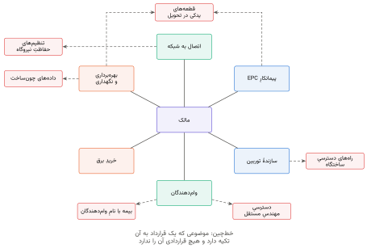
مثال 39.15 (هفت شکاف پیش از بستنِ مالی) پرسش. قراردادهای EPC، سازندهٔ توربین، بهرهبرداری و نگهداری، خریدِ برق، اتصال به شبکه و وامدهندگان کنارِ هم گذاشته شدهاند. کدام موضوعها را یکی لازم دارد و هیچکدام پوشش نمیدهد؟ (ماتریسِ ساختگی، A-431.)
پاسخ. هفت شکاف: قطعههای یدکی در تحویل (دو بار)، راههای دسترسیِ ساختگاه، دادههای چونساخت، تنظیمهای حفاظتِ نیروگاه، دسترسیِ مهندسِ مستقل، و بیمه با نامِ وامدهندگان.
تفسیر. هر شکاف پیش از بستنِ مالی یک مالک و یک بند لازم دارد. مفهومها، یعنی تضمین، حقِ جانشینی (به انگلیسی step-in)، واگذاریِ حقوق (به انگلیسی assignment) و وثیقه، اینجا توضیح داده میشوند. متنِ بندها کارِ حقوقدانانِ طرفهاست. تضمینهای پشتِ سرِ هم هم باید با هم بخوانند: تضمینِ دسترسپذیریِ بهرهبرداری نباید از تضمینِ توربین سختتر باشد بیآنکه کسی تفاوت را بپذیرد، و دورهٔ ضمانتِ سازنده نباید پیش از آغازِ بهرهبرداری تمام شود (فصل 21). وارسی: \(1 + 1 + 2 + 1 + 2 = 7\).
39.9.1 سه تضمین، سه سنجه
one year, three guarantees that measure different things
EPC: time-based, grid outages excluded: 98.58% (guarantee 98 %)
O&M: energy-based, grid excluded: 98.00% (guarantee 97 %)
PPA: contracted energy delivered: 95.50% (minimum 96 %)
EPC and O&M pass; the PPA falls short because grid
outages count against the plant there - the gap belongs
to no contractor unless the grid contract or insurance
covers it: the interface matrix names its owner (ch 21)مثال 39.16 (همه قبول، نیروگاه کمفروش) پرسش. در یک سال، ۳۰۰ ساعت قطعِ شبکه، ۱۲۰ ساعت ازکارافتادگیِ اجباری و ۹۰ ساعت ازکارافتادگیِ برنامهریزیشده رخ داده است. تضمینِ EPC، تضمینِ بهرهبرداری و حداقلِ قراردادِ خریدِ برق هر کدام چه میگویند؟
پاسخ. EPC زمانمبناست و قطعِ شبکه را کنار میگذارد: 98.58 %، قبول. بهرهبرداری انرژیمبناست و قطعِ شبکه را کنار میگذارد: 98.00 %، قبول. قراردادِ خریدِ برق انرژیِ تحویلشده را میشمارد: 95.50 %، زیرِ حداقلِ ۹۶ درصد.
تفسیر. هر سه عدد درست حساب شدهاند، اما هر کدام چیزِ دیگری را میسنجد. قطعِ شبکه در دو قرارداد بیرون گذاشته شده و در سومی شمرده شده است. کمبودِ قراردادِ خریدِ برق مالِ هیچ پیمانکاری نیست، مگر اینکه قراردادِ اتصال به شبکه یا بیمه آن را بپوشاند. ماتریسِ رابط مالکِ این شکاف را پیش از بستنِ مالی نام میبرد (شکل 39.10، فصل 21). تعریفهای قراردادیِ دسترسپذیری مالِ خودِ قراردادهاست (فصل 37). وارسی: \(1 - 120/(8760 - 300) = 0.9858\).
39.9.2 خسارتِ تأخیر در زنجیرهٔ قراردادها
delay damages down the chain, 8 weeks late (k u)
owner's loss: 8 x 185 = 1,480
EPC pays the owner 0.25% a week of 60,000: 1,200
transformer supplier pays the EPC 0.5 % of 1,160: 46.4
owner covered 81%; EPC recovers 3.9% of what it pays
the EPC carries the difference: why it buffers the
schedule and watches the supplier, not the damages;
the lenders read this chain before financial closeایده. خسارتِ مقطوعی که پیمانکارِ EPC به مالک میپردازد، ۸۱ درصدِ زیانِ هشت هفته تأخیرِ مالک را میپوشاند. خسارتی که تأمینکنندهٔ ترانسفورماتور به EPC میپردازد، فقط ۳٫۹ درصدِ آن پرداخت را برمیگرداند. فاصله را پیمانکارِ EPC میپردازد. به همین دلیل او برنامه را با شناوری میسازد و تأمینکننده را از نزدیک پی میگیرد، بهجای اینکه به خسارت تکیه کند. وامدهندگان همین زنجیره را پیش از بستنِ مالی میخوانند. برای آنها، خسارتِ مالک باید دستکم بازپرداختِ بدهی را در هفتههای تأخیر بپوشاند. اینها مفهوماند، نه مشاورهٔ حقوقی.
39.9.3 ضمانتنامهها در برابرِ تاریخهایی که باید بپوشانند
securities against the dates they must cover (weeks from order)
taking over planned at week 70; defects period to week 174
performance security to week 78, warranty security to 170
delay security that ends before its date (weeks short)
0 wk warranty -4 wk
10 wk performance -2 wk; warranty -14 wk
20 wk performance -12 wk; warranty -24 wk
a security with a fixed expiry date shrinks with every
week of delay; the contract ties extension to the dates
it covers - wording for the lawyers, dates for the engineerمثال 39.17 (ضمانتنامهای که زودتر تمام میشود) پرسش. ضمانتنامهٔ حسنِ انجامِ کار تا هفتهٔ ۷۸ و ضمانتنامهٔ دورهٔ تضمین تا هفتهٔ ۱۷۰ اعتبار دارند. تحویلِ موقت هفتهٔ ۷۰ برنامهریزی شده است و دورهٔ رفعِ نقص دو سال است. با تأخیرِ صفر، ده و بیست هفتهای، کدام ضمانتنامه زودتر از تاریخش تمام میشود؟
پاسخ. حتی بیتأخیر، ضمانتنامهٔ دورهٔ تضمین چهار هفته کم میآورد. با ده هفته تأخیر، ضمانتنامهٔ حسنِ انجامِ کار هم دو هفته کم میآورد. با بیست هفته، کمبودها ۱۲ و ۲۴ هفتهاند.
تفسیر. ضمانتنامهای با تاریخِ انقضای ثابت با هر هفته تأخیر کوتاهتر میشود. پس قرارداد تمدیدِ ضمانتنامه را به رویدادی میبندد که ضمانتنامه باید بپوشاند، نه به یک تاریخِ تقویمی. کمبودِ چهارهفتهایِ حالتِ بیتأخیر هم خطای سادهای در جمعِ تاریخهاست. همین خطا نشان میدهد چرا مهندس تاریخها را وارسی میکند. متنِ ضمانتنامه با حقوقدانها و بانکهاست. تاریخها با مهندس. وارسی: \(70 + 104 = 174 > 170\).
39.9.4 بیمهٔ وقفهٔ کار و ترانسفورماتورِ یدکی
a unit transformer fails in operation: who carries the loss?
one block out costs 1.85 k u a day (5 MW, CF 0.22)
case days out insured not insured
no spare (new unit) 210 277 111
spare on site 14 0 26
(business interruption pays after a 60-day waiting period;
the repair claim carries a 25 k u deductible)
without a spare the owner still carries the first 60 days;
with one, the outage ends inside the waiting period - the
spare, not the policy, protects the cash flow, and the
lenders read both (concepts only, not advice)مثال 39.18 (بیمه پس از شصت روز) پرسش. یک ترانسفورماتورِ واحد در بهرهبرداری خراب میشود. بیمهٔ وقفهٔ کار پس از دورهٔ انتظارِ ۶۰ روزه میپردازد. بییدکی و با یدکی، چه مقدار از زیان بیمهنشده میماند؟
پاسخ. بییدکی، بلوک ۲۱۰ روز بیرون است. بیمه ۲۷۷ هزار واحد میپردازد و ۱۱۱ هزار واحد، یعنی زیانِ ۶۰ روزِ اول، با مالک میماند. با یدکی، قطعی ۱۴ روز است و درونِ دورهٔ انتظار تمام میشود. پس ۲۶ هزار واحد با مالک میماند و بیمه چیزی نمیپردازد.
تفسیر. بیمه بخشی از زیانِ بزرگ را میپوشاند. یدکی زیان را از اصل کوتاه میکند. با بیمه، ارزشِ یدکی از درسِ پ کمتر میشود: در عمرِ نیروگاه، با ۲٫۵ خرابیِ موردِ انتظار، حدودِ ۲۱۲ هزار واحد زیانِ بیمهنشده کم میشود. این هنوز از هزینهٔ ۱۳۶ هزار واحدیِ یدکی بیشتر است (بخش 39.4.5.2). حقِ بیمه هم با یدکی معمولاً کمتر است. وامدهندگان هر دو را میخوانند: پوششِ بیمه، و اینکه پروژه دورهٔ انتظار را چگونه تاب میآورد. مفهومها آموزشیاند. شرایطِ بیمهنامه با کارگزار و بیمهگر است (بخش 21.4.4). وارسی: \((210 - 60) \times 1.85 = 277\)؛ \(2.5 \times (111 - 26) = 212\).
- چرا هفت روز کارِ اتصال در پنجرههای ششروزه جا نمیشود؟
- معادلهٔ 39.7 را توضیح دهید. برای سهمِ ۱۰ درصد و اطمینانِ ۹۰ درصد چند کارگاه لازم است؟
- یافتهٔ نمونهٔ ساعتهای کار با اعلامیهٔ تأمینکننده چه فرقی دارد؟
- چرا EPC و بهرهبرداری قبول میشوند و قراردادِ خریدِ برق نه؟
- مالکِ شکافِ قطعِ شبکه کیست؟
- چرا خسارتِ تأخیرِ تأمینکننده زیانِ پیمانکارِ EPC را نمیپوشاند؟
- چرا سازوکارِ بیشکایت نشانهٔ کارگاهِ پاک نیست؟
- چرا ضمانتنامهٔ تاریخدار با تأخیر کوتاهتر میشود؟
- چرا با یدکی، بیمهٔ وقفهٔ کار چیزی نمیپردازد و این بد نیست؟
39.10 خ. تحویلدادنیهای اطلاعاتیِ تأمینکننده
ایده. گامِ ۴ آزمایشگاه جدولِ داده را برای سه پیشنهاد وارسی کرد (بخش 39.5.4). در بستهٔ خرید، هر قلمِ داده با پنج چیز نوشته میشود: طرحواره و قالب، قاعدههای کیفیت و اعتبارسنجی، زمانِ تحویل و بهروزرسانی، حقِ دسترسی و استفاده، و معیارِ پذیرش. شناسه و سریال، پیکربندی و میانافزار، سابقههای آزمون و ضمانت، و دادهٔ نگهداری و یدکی باید پیش از پذیرشِ تجهیز برسند. پذیرشِ داده بخشی از پذیرشِ تجهیز است، نه کاری برای بعد (بخش 38.8.3).
39.10.1 بهموقعبودنِ دادهٔ تأمینکننده
supplier data of the U-A order: needed and delivered (week)
general arrangement need 6 got 5
rating plate data need 20 got 22 late 2
routine test report need 32 got 31
FAT record need 32 got 36 late 4
O&M manual need 40 got 52 late 12
spares list with part numbers need 40 got 44 late 4
3D model need 10 got 9
asset register rows need 40 got 47 late 7
on time: 38%; late items wait for the plant, not
the other way round: commissioning needs the FAT record
and O&M needs the manual and the register rows (lesson I);
the contract ties a payment to accepted data, not to
a count of filesایده. از هشت قلمِ دادهٔ سفارشِ U-A، فقط سه قلم بهموقع رسیده است. دیرکردها کارِ نیروگاه را منتظر میگذارند. راهاندازی منتظرِ سابقهٔ آزمونِ کارخانه میماند، که چهار هفته دیر است. بهرهبرداری هم منتظرِ دستورالعمل و سطرهای دفترِ داراییهاست، که دوازده و هفت هفته دیرند. پس قرارداد بخشی از پرداخت را به دادهٔ پذیرفتهشده میبندد، نه به شمارِ فایلها. هر قلم موعدی دارد که از نیازِ نیروگاه میآید. وارسیِ پذیرش هم همان قاعدههای کیفیتِ دادهٔ فصلِ ۳۸ است (بخش 38.6.7.8).
39.10.2 سطرهای دارایی که تأمینکننده تحویل داده است
asset rows delivered by U-A: 10 rows, 4 rules
tag known fails row 9
serial present fails row 4
rating 5.6 MVA (C-017) fails row 7
impedance in per cent fails row 10
rows accepted: 6 of 10; the four go back with
the rule each failed - payment for the data item waits
for accepted rows (lesson I), not for a file countایده. چهار قاعدهٔ ساده چهار سطر از ده سطر را برمیگردانند. یک برچسب «=» ندارد و در تکخطی پیدا نمیشود (فصل 23). یک سطر شمارهٔ سریال ندارد. یک سطر هنوز توانِ ۵٫۵ مگاولتآمپرِ پیش از تغییرِ C-017 را دارد. یک سطر امپدانس را بهجای درصد بهصورتِ سهم نوشته است. هیچکدام خطای بزرگ نیست، اما هر کدام در بهرهبرداری ابزاری را که این دادهها را میخوانَد به اشتباه میاندازد. پرداختِ این قلمِ داده تا پذیرشِ همهٔ سطرها میماند. هر سطرِ برگشتی هم با قاعدهای که رد کرده برمیگردد، تا تأمینکننده بداند چه چیزی را درست کند (بخش 38.6.7.8).
- معادلهٔ 39.6 را توضیح دهید.
- سهمِ برابرِ هدفِ ۹۷٪ میانِ چهار جزء چقدر است؟
- چرا زمانِ پاسخ از زمانِ تعمیر مهمتر است؟
- تضمینِ دسترسپذیری چه چیزی را ثابت نمیکند؟
- برای خطی که به بهرهبردار سپرده میشود چه چیزی پیش از ساخت توافق میشود؟
- ریسکِ بالای بیشاهد در غربالِ کار چه معنایی دارد و با آن چه میشود؟
- اعلامیهٔ تأمینکننده چگونه ثبت میشود؟
- حقِ جانشینی و واگذاریِ حقوق را در یک جمله توضیح دهید.
- پنج چیزی که هر قلمِ دادهٔ خرید با آن نوشته میشود کداماند؟
پاسخها: (۱) حاصلضربِ سهمها دستکم هدف؛ (۲) 99.24 %؛ (۳) قطعه، سفر و دسترسی بیشترِ زمان را میسازند؛ (۴) رسیدنِ نیروگاه به آن عدد؛ (۵) آزمونهای پذیرش؛ (۶) شکاف؛ نقشهٔ منبع، ممیزی، اصلاح، تشدید؛ (۷) بهعنوانِ ادعا؛ (۸) حقِ وامدهنده برای جانشینی در قرارداد، و انتقالِ حقوقِ قرارداد به طرفِ دیگر؛ (۹) طرحواره، کیفیت، زمان، حق، پذیرش.
39.11 د. تدارکاتِ دادهٔ زیستمحیطی
درسِ ب نشان داد سه عددی که سه تأمینکننده برای ردپای کربنِ یک ترانسفورماتور دادهاند مقایسهپذیر نیستند (مثال 39.3). این درس سه گام جلوتر میرود. گامِ نخست این است که بستهٔ خرید از پیش بگوید چه دادهای، با چه مرزی و با چه روشی میخواهد. گامِ دوم یک روشِ کنترلشده است برای وقتی که تأمینکننده دادهای ندارد. گامِ سوم یک قاعدهٔ تصمیم است که عدمِ قطعیت را جدی میگیرد. چارچوبها ثابتاند: ارزیابیِ چرخهٔ عمر (STD-141، STD-142)، ردپای کربنِ محصول (STD-143) و اعلامیهٔ محیطیِ نوعِ سوم (STD-145)، و قاعدهٔ مقایسهٔ فصلِ ۳۳ (بخش 33.11.2). ضریبهای مواد، کارخانه و حمل در این درس ساختگیاند و از هیچ پایگاهِ دادهٔ واقعی نیامدهاند (A-433). هیچ عددی ادعای پروژه نیست.
برنامه:
python -m companion.ch39.examples_j39.11.1 درخواستِ داده در بستهٔ خرید
environmental data request in the transformer package
functional unit:
one 5.6 MVA unit transformer as specified, delivered to site
boundary:
materials, manufacture, transport to site; use-phase losses apart
method:
ISO 14067, or ISO 14025 Type III with its product rules named
source and date:
dataset name, version and data year
verification:
third-party verified or self-declared - stated
allocation:
rule for recycled content and scrap stated
limitations:
excluded items and cut-off threshold listed
uncertainty:
stated as +/- %
update:
re-issued at delivery with the as-built bill of materials
the request goes in the supplier data schedule (lesson D)
with an owner and a due date, like any other data itemایده. درخواست از واحدِ کارکردی شروع میشود: یک ترانسفورماتورِ ۵٫۶ مگاولتآمپر با همین مشخصه، تحویلشده در ساختگاه. «یک کیلوولتآمپر» یا «یک کیلوگرم» واحدِ کارکردی نیست. ترانسفورماتورِ سبکتر با تلفاتِ بیشتر کارِ دیگری میکند. مرز میگوید چه مرحلههایی شمرده میشوند. اینجا مرز مواد، ساخت و حمل تا ساختگاه است و تلفاتِ دورهٔ بهرهبرداری جدا گزارش میشوند. قاعدهٔ تخصیص میگوید فولادِ بازیافتی و قراضه چگونه شمرده میشوند. اگر دو تأمینکننده قاعدههای متفاوتی به کار ببرند، عددهایشان حتی با مرزِ یکسان هم مقایسهپذیر نیست. درخواست مانندِ هر قلمِ دادهٔ دیگری در جدولِ دادهٔ تأمینکننده مینشیند، با مالک و موعد (بخش 39.5.4). یکی از شرطها بهروزرسانی در زمانِ تحویل است: عدد با فهرستِ موادِ ساختهشده دوباره صادر میشود. بدونِ این شرط، عددِ پیشنهاد هرگز وارسی نمیشود.
39.11.2 کیفیتِ سه اعلامیه
declarations against the request (fields answered of 9)
U-A 8 of 9 answered
missing: update
U-B 3 of 9 answered
missing: boundary, verification, allocation
missing: limitations, uncertainty, update
U-C 1 of 9 answered
missing: functional unit, boundary, method
missing: verification, allocation, limitations
missing: uncertainty, update
U-A misses only the update promise, which the contract
adds; U-B and U-C need the controlled method belowایده. U-A به هشت قلم از نُه قلم پاسخ داده است و فقط وعدهٔ بهروزرسانی را ندارد که قرارداد آن را میافزاید. اعلامیهٔ U-B مرز، وارسی، تخصیص، محدودیتها و عدمِ قطعیت را نگفته است. U-C فقط یک ضریبِ عمومیِ کهنه دارد. پرسش این نیست که کدام عدد کوچکتر است. پرسش این است که با هر کدام چه میشود کرد. عددِ U-A را میشود با شاهد به کار برد. دو عددِ دیگر را باید با روشِ کنترلشدهٔ گامِ بعد کامل کرد.
39.11.3 یک مرز برای هر سه
FACTORS = dict( # t CO2e per t of material (generic, synthetic, A-433)
core_steel=2.2, copper=3.4, oil=0.9, steel=1.8, other=2.5)
FACTORY_T_PER_MVA = 1.6 # generic factory factor, t CO2e per MVA
SEA, ROAD = 0.012, 0.09 # kg CO2e per t-km (synthetic)
BOM = { # declared masses per unit, t (supplier data schedules)
"U-A": dict(core_steel=7.1, copper=2.7, oil=3.6, steel=3.4, other=0.7),
"U-B": dict(core_steel=7.4, copper=2.9, oil=3.8, steel=3.5, other=0.8),
"U-C": dict(core_steel=7.0, copper=2.7, oil=3.6, steel=3.3, other=0.7),
}
ROUTE = {"U-A": (5_000, 600), "U-B": (0, 900), "U-C": (8_000, 600)}one boundary: cradle to site, t CO2e per unit (synthetic)
U-A: 43.0 +/- 4.1
cradle to gate 41.0 declared
transport to site 2.0 estimate
U-B: 47.4 +/- 9.7
factory (gate to gate) 8.0 declared
materials 37.9 estimate
transport to site 1.5 estimate
U-C: 47.1 +/- 9.6
materials 35.5 estimate
factory 9.0 estimate
transport to site 2.6 estimate
U-B was lowest as offered (8 t) and is highest on one
boundary; U-C's 36 t generic factor becomes a dated
estimate from its own bill of materials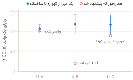
عدمِ قطعیتِ هر جمع از جزءهایش ساخته میشود. هر جزء \(x_k\) عدمِ قطعیتِ نسبیِ \(r_k\) دارد و جزءها مستقل فرض میشوند. دو عدد فقط وقتی متفاوت شمرده میشوند که فاصلهشان از عدمِ قطعیتِ ترکیبیِ آن دو بیشتر باشد:
\[ u = \sqrt{\sum_k \left(x_k\, r_k\right)^2}, \qquad \lvert x_a - x_b \rvert > \sqrt{u_a^2 + u_b^2} \tag{39.8}\]
مثال 39.19 (کمترین، بیشترین میشود) پرسش. هر سه پیشنهاد را روی مرزِ «از گهواره تا ساختگاه» بیاورید. کدام کمترین است و با چه عدمِ قطعیتی؟
پاسخ. U-A برابر با 43.0 ± 4.1 تن است: 41.0 تنِ وارسیشده و 2.0 تن برآوردِ حمل. U-B برابر با 47.4 ± 9.7 تن است: 8.0 تنِ کارخانه، 37.9 تن برآوردِ مواد از فهرستِ موادِ خودش و 1.5 تن حمل. U-C برابر با 47.1 ± 9.6 تن است و همهٔ آن برآورد است.
تفسیر. U-B با 8 تن کمترین عددِ پیشنهادی را داشت، چون مرزش مواد را بیرون گذاشته بود. روی یک مرز، بیشترین است. ضریبِ عمومیِ U-C (۳۶ تن) جایش را به برآوردی تاریخدار از فهرستِ موادِ خودش میدهد. برآوردها پهنترند، چون ضریبهای عمومی دربارهٔ این کارخانه و این فولاد چیزی نمیدانند. وارسی: \(7.4\times 2.2 + 2.9\times 3.4 + 3.8\times 0.9 + 3.5\times 1.8 + 0.8\times 2.5 = 37.86\).
39.11.4 قاعدهٔ تصمیم و روشِ کنترلشده
decision rule: a difference counts only beyond the combined
uncertainty (root-sum-square of the two)
U-A - U-B: -4.4 t, combined +/- 10.5 -> no rank
U-A - U-C: -4.1 t, combined +/- 10.5 -> no rank
U-B - U-C: +0.3 t, combined +/- 13.6 -> no rank
pairs that differ: 0
controlled method for estimates: score the upper bound
(value + uncertainty) so missing data never wins:
U-A 47.1 (verified)
U-B 57.0 (estimate)
U-C 56.7 (estimate)
the rule is written in the tender before the offers
arrive; the estimate is replaced by the supplier's own
data at delivery, and labelled as an estimate until thenمثال 39.20 (دادهای که نیست نمیبَرَد) پرسش. با معادلهٔ 39.8 کدام جفت از پیشنهادها روی کربن از هم جدا میشوند؟ اگر هیچکدام، معیارِ زیستمحیطی در ارزیابی چه میکند؟
پاسخ. هیچ جفتی جدا نمیشود. بزرگترین فاصله 4.4 تن است، در حالی که عدمِ قطعیتِ ترکیبی 10.5 تن است. با روشِ کنترلشده، برآوردها با کرانِ بالایشان امتیاز میگیرند: U-A برابر با 47.1، U-B برابر با 57.0 و U-C برابر با 56.7 تن.
تفسیر. کرانِ بالا برای این است که نبودِ داده هرگز برنده نشود. اگر برآوردِ میانه به کار میرفت، تأمینکنندهای که داده نمیدهد گاهی از کسی که دادهٔ وارسیشده میدهد جلو میافتاد. این قاعده پیش از رسیدنِ پیشنهادها در اسنادِ مناقصه نوشته میشود و انتخابِ مالک است، نه حقیقتی فنی. برآورد تا زمانِ تحویل «برآورد» نامیده میشود. در زمانِ تحویل، دادهٔ خودِ تأمینکننده جای آن را میگیرد. توصیهٔ واگذاریِ درسِ ت از این معیار تغییر نمیکند (بخش 39.5.5)، چون U-A به دلیلهای دیگر هم جلوتر بود. وارسی: \(\sqrt{4.1^2 + 9.7^2} = 10.5 > 4.4\).
39.11.5 دورهٔ بهرهبرداری: جایی که بیشترِ ردپا هست
the use phase: average losses over the life of one unit
(load-loss factor 0.2, 25 years; grid factor 0.5 t/MWh, ch 33)
offer avg kW MWh lost t CO2e if displaced x built
U-A 12.3 2,694 1,347 31
U-B 15.6 3,416 1,708 36
U-C 13.5 2,956 1,478 31
the losses dwarf the built footprint, and the loss
guarantee with its capitalisation (lesson D, ch 25)
already prices them - so the evaluation does not add
them again as carbon; it reports them beside itایده. اگر انرژیِ تلفشده جایگزینِ برقِ شبکه با ضریبِ آموزشیِ 0.5 t/MWh فصلِ ۳۳ باشد، تلفاتِ ۲۵ سال برای هر واحد 1,347 تا 1,708 تن میشود. این ۳۱ تا ۳۶ برابرِ ردپای ساخت است. فاصلهٔ U-A و U-B در تلفات (۳۶۱ تن) هشتاد برابرِ فاصلهشان در ساخت (۴٫۴ تن) است. اما این عدد دوباره به قیمت افزوده نمیشود. تضمینِ تلفات و سرمایهایکردنِ آن در قیمتِ ارزیابیشده همین تلفات را قیمت گذاشتهاند (بخش 39.5.2، فصلِ ۲۵). گزارش هر دو را کنارِ هم میآورد و یکی را دو بار نمیشمارد. ضریبِ شبکه به بازار و سالِ پروژه بسته است و عددِ اینجا آموزشی است (فصلِ ۳۳).
هیچ عددِ این درس ادعای پروژه نیست. برآورد با برچسبِ «برآورد» و با منبع، تاریخ و عدمِ قطعیتش گزارش میشود. اعلامیهٔ وارسینشده یا ضریبِ عمومی هرگز نتیجهٔ تضمینشدهٔ پروژه نیست. هر ادعای عمومی دربارهٔ کربنِ پروژه پس از دادهٔ تحویل و وارسیِ مستقل ساخته میشود (فصلِ ۳۳).
- واحدِ کارکردی چیست و چرا «یک کیلوولتآمپر» کافی نیست؟
- نُه قلمِ درخواستِ دادهٔ زیستمحیطی را نام ببرید.
- چرا قاعدهٔ تخصیص در درخواست میآید؟
- روشِ کنترلشده برای دادهٔ نبوده چه گامهایی دارد؟
- معادلهٔ 39.8 را توضیح دهید.
- چرا U-B از کمترین به بیشترین رفت؟
- چرا برآوردها با کرانِ بالا امتیاز میگیرند و چه کسی این قاعده را انتخاب میکند؟
- چرا تلفاتِ دورهٔ بهرهبرداری به قیمتِ ارزیابیشده افزوده نمیشوند؟
- عددِ پیشنهادی کِی و چگونه وارسی میشود؟
39.12 ساخت و تولیدِ صنعتی: بازرسی در کارخانهٔ تأمینکننده
خریدار کالا را نمیسازد، اما در کارخانهٔ سازنده چیزهایی را وارسی میکند. مرزِ میانِ این دو روشن است. کنترلها مالِ کارخانهاند: نقشهٔ فرایند، آزمونِ جاری، کنترلِ زیرتأمینکنندگان. خریدار شاهدِ آن کنترلها را میبیند و در نقطههای توقف و شاهد حاضر میشود. فصلهای ۴۰ تا ۴۸ همین کارخانهها را از درون نشان میدهند: هر کنترل چه چیزی را ثابت میکند و سابقهاش باید چه شکلی داشته باشد. این بخش پلِ میانِ تدارکات و آن فصلهاست. عددها آموزشیاند (A-429) و هیچ دستورِ ساختی داده نمیشود.
برنامه:
python -m companion.ch39.examples_v39.12.1 آنچه خریدار در هر کارخانه وارسی میکند
VERIFY = [ # package, what the buyer verifies at the factory, H/W, chapter
("PV modules", "EL images, flash test, BOM lock", 2, 41),
("wind turbines", "blade inspection, drive-train test", 3, 42),
("unit transformers", "heat run, losses, insulation", 3, 43),
("inverters", "routine test, firmware version", 2, 44),
("battery containers", "cell traceability, module test", 3, 45),
("MV cables, switchgear", "routine tests, PD where applicable", 2, 46),
("structures, foundations", "weld and coating records", 1, 47),
("SCADA, metering", "FAT of the integrated system", 2, 48),
]what the buyer verifies at each factory (H/W points a batch)
package points chapter verifies
PV modules 2 41 EL images, flash test, BOM lock
wind turbines 3 42 blade inspection, drive-train test
unit transformers 3 43 heat run, losses, insulation
inverters 2 44 routine test, firmware version
battery containers 3 45 cell traceability, module test
MV cables, switchgear 2 46 routine tests, PD where applicable
structures, foundations 1 47 weld and coating records
SCADA, metering 2 48 FAT of the integrated system
18 points a batch, about 27 inspector-days with travel
the buyer verifies the controls, the factory owns them:
chapters 40-48 show what each control proves, so the
inspector knows what a record should look likeایده. هشت بسته در هر دسته ۱۸ نقطهٔ توقف یا شاهد دارند. با سفر، این حدودِ ۲۷ روزِ کارِ بازرس است. فهرست برای خریدار برنامهٔ کار میسازد: چه کسی، کجا، کِی و با چه فهرستِ وارسیای. ستونِ «فصل» میگوید بازرس کجا یاد میگیرد هر سابقه باید چه چیزی را نشان دهد. تصویرِ الکترولومینسانس در فصلِ ۴۱ میآید، آزمونِ گرمایی در فصلِ ۴۳، و ردیابیِ سلول در فصلِ ۴۵. بازرسی که نداند یک سابقهٔ خوب چه شکلی دارد، فقط امضا جمع میکند.
39.12.2 نمونهگیری و آزمونِ توانِ ماژول در کارخانه
PV modules at the factory: lots of 3,000
defect sampling (AQL 1 %, LTPD 4 %): n = 198, accept if <= 4
power: 50 modules flashed, mean 548.2 W, sd 2.4 W
one-sided 95 % lower bound of the mean: 547.6 W
nameplate 550 W with no negative tolerance: the lot
is held; the whole lot's power is in doubt,
not one module - the sample says the line is set low
(flash calibration or cell bin), a question for ch 41مثال 39.21 (میانگینی که زیرِ پلاک است) پرسش. از دستهٔ ۳٬۰۰۰ ماژولیِ ۵۵۰ واتی، ۵۰ ماژول آزمونِ فلش شدهاند: میانگین 548.2 W و انحرافِ معیار 2.4 W. قرارداد رواداریِ منفی نمیپذیرد. دسته پذیرفته میشود؟
پاسخ. نه. کرانِ پایینِ یکطرفهٔ ۹۵ درصدیِ میانگین 547.6 W است، زیرِ پلاک. دسته نگه داشته میشود.
تفسیر. پرسش این نیست که یک ماژول کمتوان است. پرسش این است که آیا خطِ تولید زیرِ پلاک تنظیم شده است. نمونه میگوید چنین است: میانگینِ همهٔ دسته در تردید است. علت ممکن است در کالیبراسیونِ دستگاهِ فلش باشد یا در دستهبندیِ سلولها. اینها پرسشهایی برای فصلِ ۴۱ است. برنامهٔ نمونهگیریِ عیب با فصلِ ۴۰ (فصل 40) و استانداردِ نمونهگیری (STD-076) همراستاست. عددهای اینجا از محاسبهٔ دوجملهای میآیند، نه از جدولِ استاندارد. وارسی: \(548.2 - 1.677 \times 2.4/\sqrt{50} = 547.6\).
39.12.3 ارزشِ بازرسی در کارخانه
what source inspection is worth over the eight packages
chance of a systematic fault in a package: 5%; cost
if it reaches site: 400 k u; found at the factory: 60%
expected saving: 96 k u; inspection: 27 days x 1.2 = 32 k u
inspection pays here because a site fault is costly; it
does not replace the factory's own control - it checks itایده. اگر هر بسته با احتمالِ ۵ درصد ایرادی سیستمی داشته باشد، هزینهٔ آن ایراد در ساختگاه ۴۰۰ هزار واحد باشد، و بازرس ۶۰ درصدِ چنین ایرادهایی را در کارخانه پیدا کند، صرفهٔ موردِ انتظار برای هشت بسته ۹۶ هزار واحد است. هزینهٔ بازرسی ۳۲ هزار واحد است. پس بازرسی میارزد، چون ایرادِ ساختگاهی گران است. اما این عدد جای کنترلِ خودِ کارخانه را نمیگیرد. بازرس کنترل را میآزماید، نمیسازد. حلقهٔ بسته از کارخانه تا ساختگاه در فصلِ ۴۰ ادامه مییابد (فصل 40).
- مرزِ کارِ کارخانه و کارِ خریدار در کنترلِ کیفیت چیست؟
- چرا بازرس باید بداند یک سابقهٔ خوب چه شکلی دارد؟
- چرا میانگینِ زیرِ پلاکِ نمونه کلِ دسته را در تردید میگذارد؟
- کرانِ پایینِ یکطرفهٔ میانگین را برای نمونهٔ این بخش حساب کنید.
- بازرسی در کارخانه چه زمانی میارزد و چه چیزی را جایگزین نمیکند؟
39.13 نیروگاهِ P: سه مثالِ یکپارچه
برنامه:
python -m companion.ch39.integratedمثال 39.22 (مقدماتی: دو نتیجه با دست) پرسش. ضریبهای تلفات، تلفاتِ سرمایهایِ U-A و خسارتِ هشت هفته تأخیر را با دست حساب کنید.
two procurement results checked by hand
A = 70 u/MWh x 8,760 h x annuity(7.5 %, 25 y) = 6.84 k u/kW
B = 0.20 A = 1.37 k u/kW
U-A losses per unit: 6.84 x 4.1 + 1.37 x 41 = 84.1 k u; x 10 = 841
delay damages, 8 weeks at 0.5 % of 1,160 k u: 46.4 k u
a hand check of A catches the slip of annuity years vs
months, or of MWh vs kWh in the energy priceپاسخ. \(A = 6.84\) و \(B = 1.37\) هزار واحد بر کیلووات، ۸۴۱ هزار واحد تلفات برای ده دستگاه، و ۴۶٫۴ هزار واحد خسارت. همه برابر با کد.
تفسیر. لغزشِ رایج در ضریبِ \(A\) یکاهاست: قیمتِ انرژی بر مگاواتساعت و تلفات بر کیلووات. ضریبِ هزار در یک جا گم میشود و ارزیابی وارونه میشود. حسابِ دستی آن را پیدا میکند. وارسی: \(70 \times 8\,760/10^6 \times 11.15 = 6.84\).
مثال 39.23 (میانی: بستهٔ تدارکاتِ ترانسفورماتورهای واحد در عدد) پرسش. بستهٔ تدارکات را در عدد خلاصه کنید.
the procurement package of the PV unit transformers in numbers
offers: U-A 2,072, U-C 2,093, U-B 2,141 k u evaluated;
lowest price U-B, lowest evaluated U-A
U-B not acceptable: no heat-run witness, no data schedule,
process control below its floor
data schedule: U-A 93 %, U-C 86 %, U-B 57 % of 14 items
sub-tier on-time chance 86 %; core steel gets a buffer
labour screen: 1 high-risk sub-supplier without evidence
contracts: 7 gaps to close before financial close
prequalification: U-D not invited; U-B passed by a hair
ranking holds above 52 u/MWh (U-C would undercut below)
exposure peak 290 k u at week 8; 174 k u uncovered
a strategic spare unit pays (expected loss 973 k u)
warranty security ends 4 weeks short even without delayتفسیر. کمترین قیمت، کمترین قیمتِ ارزیابیشده و پیشنهادِ پذیرفتنی سه چیزِ متفاوتاند. ارزیابیِ شفاف هر سه را جدا نشان میدهد و ترتیبِ آنها را پیش از گشودنِ پیشنهادها اعلام میکند: نخست انطباقِ بحرانی، سپس کفِ ممیزی، سپس قیمتِ ارزیابیشده. وارسی: جدول 39.1.
مثال 39.24 (یکپارچه: مبنای تدارکاتِ نیروگاهِ P) پرسش. مبنای تدارکات را با یافتهها و موردهای باز بنویسید.
D-043 procurement basis of Plant P (teaching)
1 packages: EPC with a separate turbine OEM contract; the
owner's engineer keeps SCADA integration
2 evaluation: compliance matrix first (critical items are
cleared, not priced), then evaluated price with losses,
delivery and currency, then the capability audit floors
3 PV unit transformers: recommend U-A subject to closing
two deviations and the data update duty
4 supplier data: 14 items with schema, update duty and
rights; delivery is accepted on the data, not a count
5 RAM: plant targets split into supplier shares with
response and repair times and on-site spares
6 labour: proportionate screen to tier 2; claims kept apart
from verified findings; remedy and escalation in contract
7 contracts: interface matrix with an owner for every gap;
wording for the lawyers
8 commercial: milestones near value; securities tied to
events, not dates; one strategic spare transformer
9 factory: 18 hold/witness points; lots held on sample
evidence (module power), source inspection funded
open: grid operator's interface schedule (U-115, U-119);
tier-2 source of U-B's winding wire if U-B returns (U-120)تفسیر. این تصمیمِ D-043 است. یافتههایی که به فصلهای دیگر برمیگردند:
- ارزانترین پیشنهادِ ترانسفورماتور گرانترین مالکیت را دارد. ضریبهای تلفاتِ فصلِ ۲۵ در همهٔ خریدهای ترانسفورماتور به کار میروند.
- زنجیرهٔ تأمینِ ترانسفورماتور ۸۶٪ بهموقع است. فولادِ هسته ذخیره میگیرد و پیگیریِ سفارش تا ردهٔ دوم میرود (فصلهای ۴۰ و ۴۳).
- خسارتِ مقطوع یکبیستوپنجمِ هزینهٔ هفتگیِ تأخیرِ بخشِ خورشیدی را میپوشاند. شناورِ برنامه در برنامهٔ ساخت میماند (فصلهای ۲۲ و ۴۹).
- سهمِ دسترسپذیریِ اینورتر با پاسخِ ۲۴ ساعته و انبارِ ساختگاه برآورده میشود (فصلهای ۵۱ و ۵۲).
- هفت شکافِ میانِ قراردادها پیش از بستنِ مالی مالک میگیرند (فصلهای ۲۱ و ۵۹).
- منبعِ ردهٔ دومِ سیمِ مسیِ U-B، اگر دوباره در رقابت بیاید، روشن نیست (U-120).
39.14 عددهای کلیدیِ تدارکاتِ نیروگاهِ P
| کمیت | مقدار | مثال |
|---|---|---|
| قیمتِ ارزیابیشده U-A / U-C / U-B | 2,072 / 2,093 / 2,141 k u | مثال 39.7 |
| تلفاتِ سرمایهایِ ده دستگاهِ U-A | 841 k u | مثال 39.22 |
| امتیازِ ممیزی U-A / U-C؛ U-B | 3.76 / 3.24؛ رد | مثال 39.8 |
| جدولِ داده U-A / U-C / U-B | 93 / 86 / 57 % | بخش 39.5.4 |
| زنجیرهٔ بهموقع | 86 % | مثال 39.1 |
| خسارت در برابرِ هزینهٔ هفتگیِ تأخیر | 5.8 در برابرِ 145 k u | مثال 39.5 |
| شکافهای میانِ قراردادها | ۷ | مثال 39.15 |
| قیمتِ انرژیای که رتبه را عوض میکند | 52 u/MWh | مثال 39.10 |
| بیشترین مقدارِ در معرضِ خطر | 290 k u، هفتهٔ ۸ | مثال 39.6 |
| شانسِ رسیدن با سفارشِ برنامهریزیشده | 80 % | بخش 39.2.4.2 |
| سالهای بالای بودجه، قطعه در انبار | 57 % | مثال 39.12 |
| کمبودِ ضمانتنامهٔ دورهٔ تضمین | ۴ هفته | مثال 39.17 |
| سطرهای پذیرفتهشدهٔ دادهٔ دارایی | ۶ از ۱۰ | بخش 39.10.2 |
39.15 گردشِ کارِ تدارکات
- راهبردِ بستهها، ساختن یا خریدن، نقشهٔ زیرتأمینکنندگان و پیوستگیِ تأمین (بخش 39.2).
- مشخصهٔ عملکردی یا ساخت بر پایهٔ نقشه؛ مالکیتِ طراحی؛ بازبینیِ فنی با شاهد (بخش 39.3).
- خسارتِ مقطوع، ضمانت، یدکی، نقطههای شاهد، عدمانطباق و امتیاز، تغییر و ادعا (بخش 39.4).
- ماتریسِ انطباق؛ قیمتِ ارزیابیشده؛ ممیزی با کف؛ جدولِ داده؛ توصیه با شرط (بخش 39.5).
- سهمهای دسترسپذیری، پاسخ و تعمیر، انبار، تضمین با پراکندگی (بخش 39.6).
- تقسیمِ کارهای اتصال؛ آزمونهای پذیرشِ سپردن (بخش 39.7).
- غربالِ متناسبِ کار؛ ادعا جدا از شاهد؛ اصلاح و تشدید (بخش 39.8).
- ماتریسِ رابطِ قراردادها؛ مالک برای هر شکاف (بخش 39.9).
- اقلامِ داده با طرحواره، کیفیت، زمان، حق و پذیرش (بخش 39.10).
39.16 آزمایشگاههای پایتونِ این فصل
| آزمایشگاه | برنامه | آنچه میسازد |
|---|---|---|
| داده | sources | بسته، الزامها، سه پیشنهاد، ممیزیها، اقلامِ داده، غربالِ کار، قراردادها |
| تأمین و بازبینی | examples_a | بستهها، ساختن یا خریدن، زیرتأمینکنندگان، بازبینیِ فنی، دادهٔ محیطی، خسارت، ضمانت، نقطههای شاهد |
| آزمایشگاهِ ت | lab_d | ماتریس، قیمتِ ارزیابیشده، ممیزی، جدولِ داده، توصیه |
| خدمت و قرارداد | examples_e | سهمهای دسترسپذیری، پاسخ و تعمیر، تقسیمِ کارِ اتصال، غربالِ کار، شکافها، تضمین |
| دادهٔ زیستمحیطی | examples_j | درخواست، کیفیت، یک مرز، قاعدهٔ تصمیم، دورهٔ بهرهبرداری |
| تدارکات در عدد | examples_s | دو منبع، زمانِ تحویل، ارز، جابهجاییِ رتبه، در معرضِ خطر، یدکی، ادعا، شاهد |
| خدمت و قرارداد در عدد | examples_t | سهمِ وزنی، شبیهسازیِ ازکارافتادگی، خریدِ پایانِ تولید، پنجرهٔ قطع، ممیزی، سه تضمین، زنجیرهٔ خسارت، دادهٔ بهموقع |
| بازبینی و صلاحیت | examples_u | پیشصلاحیت، بارِ کارخانه، حمل، آزمونِ نوعی، ویرایش، روشنسازی، شکایت، ضمانتنامه، سطرهای دارایی |
| کارخانه و بیمه | examples_v | ماتریسِ وارسی، توانِ ماژول، ارزشِ بازرسی، بیمهٔ وقفهٔ کار، موجودیِ یدکی |
| نیروگاهِ P | integrated | با دست، بسته، مبنای D-043 |
| مثالها و پاسخها | worked | سطرهای E01 و P01 به بعد |
ماژولِ تازهٔ procure با آزمونهایی در برابرِ حسابِ دستی پایهٔ این برنامههاست. ضریبهای تلفات از ماژولِ transformer فصلِ ۲۵ دوباره به کار رفتهاند.
39.17 جعبهٔ استاندارد و انطباق
- ویرایشِ هر استانداردی که در پیشنهاد نام برده شود با دفترِ استانداردهای پروژه مقایسه میشود؛ نسخهٔ دیگر عدول است.
- دادهٔ زیستمحیطیِ محصول فقط با مرز و روشِ یکسان مقایسه میشود (ISO 14025:2026، STD-145؛ ISO 14067:2018، STD-143).
- چارچوبِ حقوقِ کار و بررسیِ دقیقِ زنجیرهٔ تأمین از قانونِ کشور و تعهدهای پروژه و وامدهنده میآید (STD-108، STD-109)؛ قانونِ کشوری، اگر هست، در فصلهای ۵۵ تا ۵۷ بررسی میشود.
- مفهومهای قراردادی بیبندِ حقوقی آمدهاند؛ متنِ قراردادها با حقوقدانانِ طرفهاست.
- هیچ عددی در این فصل الزام نیست و هیچ بندی از استانداردها نقل نشده است. (وارسیشده 2026-11-17.)
39.18 تحویلدادنیِ نیروگاهِ P
| سند | محتوا | معیارِ پذیرش |
|---|---|---|
| PLP-PRJ-REP-0005 | توصیهٔ واگذاریِ ترانسفورماتورهای واحد | ماتریس، قیمتِ ارزیابیشده، ممیزی، داده، شرطها |
| PLP-PRJ-REG-0022 | دفترِ عدولها و ماتریسِ انطباق | هر عدول با قیمت یا رفع |
| PLP-PRJ-LST-0001 | جدولِ پذیرشِ دادهٔ تأمینکننده | هر قلم با طرحواره، کیفیت، زمان، حق |
| PLP-PRJ-REG-0023 | ماتریسِ ریسکِ رابط و پادمانها | هر شکاف با مالک؛ ادعا جدا از شاهد |
| PLP-PRJ-SPC-0001 | الزامهای کنترلشدهٔ خرید (قابلیتِ اطمینان، خدمت، داده) | هر الزام سنجشپذیر |
این فصل اینها را به پروندهٔ نیروگاهِ P میافزاید:
- تصمیمِ D-043: مبنای تدارکات (مثال 39.24).
- فرضهای A-425 تا A-432:
- A-425: بستهٔ ترانسفورماتورهای واحد و ضریبهای مالیِ ارزیابی.
- A-426: ممیزیهای ساختگی با وزنها و کفها.
- A-427: سه پیشنهادِ ساختگی با پاسخها و عدولها.
- A-428: قاعدهٔ توصیهٔ واگذاری.
- A-429: عددهای آموزشیِ خسارت، ضمانت، زنجیره و خدمت.
- A-430: غربالِ ساختگیِ کار.
- A-431: ماتریسِ ساختگیِ قراردادها.
- A-432: اقلامِ دادهٔ تأمینکننده و تعهدهای سه پیشنهاد.
- مجهول: منبعِ ردهٔ دومِ سیمِ مسیِ U-B (U-120).
- یافتهها: تلفات در همهٔ خریدهای ترانسفورماتور، ذخیرهٔ فولادِ هسته، شناورِ برنامه، پاسخِ ۲۴ ساعته با انبار، مالک برای هفت شکاف.
- کتابخانهٔ همراه: ماژولِ
procureبا آزمونها و برنامههای فصلِ ۳۹.
39.19 جمعبندی
- راهبردِ تأمین: هر تقسیم حاشیه را کم و رابط را زیاد میکند؛ ساختن یا خریدن برای هر قلم؛ زنجیرهٔ ردهٔ دوم کمتر از کارخانه بهموقع است؛ قطعهٔ تکمنبع ذخیره یا منبعِ دوم میگیرد؛ پیوستگیِ یدکی در طولِ عمر (بخش 39.2).
- مشخصه و بازبینی: مشخصهٔ عملکردی یا ساخت بر پایهٔ نقشه، و مالکیتِ طراحی؛ بازبینیِ فنیِ هر قلم با شاهد؛ ویرایشِ استانداردها؛ دادهٔ زیستمحیطی فقط با مرز و روشِ یکسان مقایسهپذیر (بخش 39.3).
- کنترلهای تجاری: خسارتِ مقطوع با سقف، برآوردی از پیش و نه بیمه؛ ارزشِ ضمانت در شاهدِ خرابیهای زودرس؛ نقطههای شاهد؛ عدمانطباق با تعمیر یا امتیازِ کتبی؛ تغییر و ادعا با سابقه (بخش 39.4).
- آزمایشگاه: انطباقِ بحرانی رفع یا رد؛ قیمتِ ارزیابیشده با تلفات، تأخیر و ارز؛ ممیزی با کف؛ جدولِ داده؛ توصیه با شرط، واگذاری با مالک (بخش 39.5).
- قابلیتِ اطمینان و خدمت: هدف به سهمهای سنجشپذیر تقسیم میشود؛ پاسخ و انبار سهم را میسازند؛ تضمین قولِ پرداخت است، نه شاهدِ عملکرد (بخش 39.6).
- کارهای اتصال: مرزِ طراحی، ساخت، مالکیت و ضمانت برای هر قلم؛ آزمونهای سپردن پیش از ساخت (بخش 39.7).
- حقوقِ کار: غربالِ متناسب؛ شکافِ بیشاهد یافته نیست؛ ادعا جدا از شاهد؛ اصلاح و تشدید؛ سازوکارِ شکایت (بخش 39.8).
- قراردادها: ماتریسِ رابط و مالک برای هر شکاف پیش از بستنِ مالی؛ مفهومها بیبندِ حقوقی (بخش 39.9).
- داده: هر قلم با طرحواره، کیفیت، زمان، حق و پذیرش (بخش 39.10).
- دادهٔ زیستمحیطی: واحدِ کارکردی و مرز در درخواست؛ کیفیتِ هر اعلامیه با نُه قلم؛ یک مرز برای همه با روشِ کنترلشده؛ تفاوت فقط بیش از عدمِ قطعیتِ ترکیبی؛ برآورد با کرانِ بالا تا داده نبرد؛ تلفات بیشترِ ردپاست و در قیمت آمده است (بخش 39.11).
- تدارکات در عدد: زیرتأمینکنندهٔ مشترک ریسکِ دو منبع را برمیگرداند؛ تاریخِ سفارش از صدکِ ۹۰؛ ارز با سهمِ ارزی؛ رتبه با قیمتِ انرژی جابهجا میشود و جابهجایی گزارش میشود؛ پرداختِ پیش از ارزش در معرضِ خطر است؛ یدکی با قانونِ پواسون؛ ادعا بر سوابق؛ شاهدِ نمونهای؛ بودجهٔ وزنی و شبیهسازیِ سالهای بد؛ خریدِ پایانِ تولید؛ پنجرهٔ قطع؛ ممیزی با شمارِ کافی؛ سه تضمین با سه سنجه؛ زنجیرهٔ خسارت؛ دادهٔ بهموقع (بخش 39.2.4، بخش 39.4.5، بخش 39.6.4).
- بازرسی در کارخانه: کنترل مالِ کارخانه است و شاهدش مالِ خریدار؛ هر سابقه با فصلِ سازندهاش خوانده میشود؛ میانگینِ نمونه زیرِ پلاک کلِ دسته را نگه میدارد؛ بازرسی وقتی میارزد که ایرادِ ساختگاهی گران است (بخش 39.12).
39.19.1 واژگانِ فصلِ ۳۹
| فارسی | انگلیسی | یادداشت |
|---|---|---|
| تدارکات | procurement | |
| ساختن یا خریدن | make or buy | |
| پیوستگیِ تأمین | continuity of supply | |
| زیرتأمینکننده | sub-supplier | tier 2 |
| مشخصهٔ عملکردی | performance specification | |
| ساخت بر پایهٔ نقشه | build to print | |
| مالکیتِ طراحی | design ownership | |
| ماتریسِ انطباق و عدول | compliance and deviation matrix | |
| قیمتِ ارزیابیشده | evaluated price | |
| تلفاتِ سرمایهای | capitalised losses | |
| ممیزیِ توانمندی | capability audit | |
| کفِ بحرانی | critical floor | |
| خسارتِ مقطوع | liquidated damages | LD |
| ضمانت | warranty | |
| تضمین | guarantee | |
| نقطهٔ شاهد | witness point | |
| عدمانطباق | nonconformity | |
| امتیازِ کتبی | concession | |
| دستورِ تغییر | change order | |
| ادعا | claim | |
| هزینهٔ چرخهٔ عمر | life-cycle cost | |
| منسوخ شدن | obsolescence | |
| بررسیِ دقیقِ زنجیرهٔ تأمین | supply-chain due diligence | |
| سازوکارِ شکایت | grievance mechanism | |
| بستنِ مالی | financial close | |
| حقِ جانشینی | step-in right | |
| واگذاریِ حقوق | assignment | |
| جدولِ دادهٔ تأمینکننده | supplier data schedule | |
| مرحلهٔ پرداخت | milestone payment | |
| ضمانتنامهٔ پیشپرداخت | advance payment guarantee | |
| خریدِ پایانِ تولید | last-time buy | |
| پنجرهٔ قطع | outage window | |
| طولانیشدن | prolongation | |
| اختلال | disruption | |
| پیشصلاحیت | prequalification | |
| شرطِ تحویل | delivery term | concept |
| واحدِ کارکردی | functional unit | |
| مرزِ سامانه | system boundary | |
| قاعدهٔ تخصیص | allocation rule | |
| روشِ کنترلشده | controlled method (estimates) |
39.20 ارزیابیِ پلکانی
معیارِ تسلطِ این فصل: خواننده میتواند راهبردِ بستهها و ساختن یا خریدن را با رابطها بسنجد؛ پیشنهادها را با ماتریسِ انطباق، قیمتِ ارزیابیشده، ممیزیِ توانمندی و جدولِ داده ارزیابی کند و توصیهٔ مشروط بدهد؛ اهدافِ قابلیتِ اطمینان را به الزامهای سنجشپذیرِ تأمینکننده بدل کند؛ کارهای اتصال را تقسیم کند؛ غربالِ متناسبِ کار را با جدا کردنِ ادعا از شاهد انجام دهد؛ و شکافهای میانِ قراردادها را با مالک پیدا کند. پاسخها در بخش 39.21 آمدهاند.
39.20.1 پلهٔ ۱: مبانی
تمرین 39.1 چرا هر تقسیمِ کار رابط میافزاید؟
تمرین 39.2 دو شرطِ «خریدن» را بنویسید.
تمرین 39.3 معادلهٔ 39.1 را توضیح دهید.
تمرین 39.4 با قطعهٔ تکمنبعِ دیرتحویل چه میشود؟
تمرین 39.5 مشخصهٔ عملکردی و ساخت بر پایهٔ نقشه را مقایسه کنید.
تمرین 39.6 یازده قلمِ بازبینیِ فنی را نام ببرید.
تمرین 39.7 چرا ویرایشِ استاندارد در پیشنهاد وارسی میشود؟
تمرین 39.8 پنج چیزی که دادهٔ زیستمحیطیِ مقایسهپذیر میگوید کداماند؟
تمرین 39.9 معادلهٔ 39.2 را توضیح دهید.
تمرین 39.10 چرا خسارتِ مقطوع بیمه نیست؟
تمرین 39.11 ارزشِ بزرگترِ دورهٔ ضمانت چیست؟
تمرین 39.12 نقطهٔ شاهد چیست؟ سه نمونه بیاورید.
تمرین 39.13 دو راهِ رفعِ عدمانطباق را بنویسید.
تمرین 39.14 سه مرزِ پذیرشِ قرارداد را نام ببرید.
تمرین 39.15 ریسکِ سابقه در ادعاها یعنی چه؟
تمرین 39.16 چرا عدول روی الزامِ بحرانی قیمت نمیگیرد؟
تمرین 39.17 معادلهٔ 39.5 را توضیح دهید.
تمرین 39.18 کفِ بحرانی در ممیزی چه میکند؟
تمرین 39.19 چهارده قلمِ جدولِ داده را دستهبندی کنید.
تمرین 39.20 توصیه و واگذاری با کیست؟
تمرین 39.21 معادلهٔ 39.6 را توضیح دهید.
تمرین 39.22 چه شاهدی از تأمینکننده برای قابلیتِ اطمینان خواسته میشود؟
تمرین 39.23 چرا پاسخِ ۲۴ ساعته بیانبار فقط روی کاغذ است؟
تمرین 39.24 تضمینِ دسترسپذیری چه چیزی را ثابت نمیکند؟
تمرین 39.25 برای هر قلمِ کارهای اتصال چه مرزهایی گفته میشود؟
تمرین 39.26 شکاف در غربالِ کار با یافته چه فرقی دارد؟
تمرین 39.27 اعلامیهٔ تأمینکننده چگونه ثبت میشود؟
تمرین 39.28 ماتریسِ رابطِ قراردادها چه چیزی را پیدا میکند؟
تمرین 39.29 حقِ جانشینی و واگذاریِ حقوق را تعریف کنید.
تمرین 39.30 پنج چیزی که هر قلمِ داده با آن نوشته میشود کداماند؟
تمرین 39.31 واحدِ کارکردیِ خریدِ ترانسفورماتورِ واحد چیست؟
تمرین 39.32 نُه قلمِ درخواستِ دادهٔ زیستمحیطی را نام ببرید.
تمرین 39.33 معادلهٔ 39.8 را توضیح دهید.
تمرین 39.34 چرا برآوردها با کرانِ بالا امتیاز میگیرند؟
تمرین 39.35 چرا زیرتأمینکنندهٔ مشترک فایدهٔ دو منبع را کم میکند؟
تمرین 39.36 چرا تاریخِ سفارش از صدکِ ۹۰ زمانِ تحویل تعیین میشود؟
تمرین 39.37 مقدارِ در معرضِ خطر در یک سفارش چیست؟
تمرین 39.38 معادلهٔ 39.3 را توضیح دهید.
تمرین 39.39 طولانیشدن و اختلال در ادعای تأخیر چه فرقی دارند؟
تمرین 39.40 چرا رتبهٔ پیشنهادها با قیمتِ انرژی عوض میشود؟
تمرین 39.41 خریدِ پایانِ تولید چیست؟
تمرین 39.42 معادلهٔ 39.7 را توضیح دهید.
تمرین 39.43 پیشصلاحیت چیست و چرا پیش از قیمت میآید؟
تمرین 39.44 چرا انتظار با بارِ کارخانه خطی رشد نمیکند؟
تمرین 39.45 گزارشِ آزمونِ نوعی کِی واحدِ دیگری را میپوشاند؟
تمرین 39.46 ارجاعِ بیتاریخ به یک استاندارد چه مشکلی دارد؟
تمرین 39.47 خریدار در کارخانهٔ سازنده چه چیزی را وارسی میکند و چه چیزی را نه؟
39.20.2 پلهٔ ۲: تحلیل
تمرین 39.48 ضریبِ A با ۷۰ واحد بر مگاواتساعت، ۲۵ سال، ۷٫۵٪؟
تمرین 39.49 ضریبِ B با ضریبِ بارِ تلفاتِ ۰٫۲۰؟
تمرین 39.50 تلفاتِ سرمایهایِ یک دستگاهِ U-B؟
تمرین 39.51 تلفاتِ ده دستگاهِ U-C؟
تمرین 39.52 خسارتِ چهار هفته تأخیرِ U-B؟
تمرین 39.53 اندوختهٔ ارزِ U-C؟
تمرین 39.54 قیمتِ ارزیابیشدهٔ U-A؟
تمرین 39.55 فاصلهٔ U-C از U-A؟
تمرین 39.56 خسارتِ بیست هفته با سقفِ ۱۰٪ از ۱٬۱۶۰؟
تمرین 39.57 درآمدِ هفتگیِ بخشِ خورشیدی با ۷۰ واحد بر مگاواتساعت؟
تمرین 39.58 بهموقع بودنِ زنجیرهٔ پنجحلقهای؟
تمرین 39.59 سهمِ برابرِ ۹۷٪ میانِ چهار جزء؟
تمرین 39.60 دسترسپذیریِ اسکید با ۲٬۰۰۰ ساعت و ۲۴ + ۸ ساعت؟
تمرین 39.61 همان با ۷۲ + ۲۴ ساعت؟
تمرین 39.62 سهمِ جدولِ دادهٔ U-B، ۸ از ۱۴؟
تمرین 39.63 امتیازِ وزنیِ ممیزیِ U-A؟
تمرین 39.64 رابطهای میانِ پنج بسته؟
تمرین 39.65 تعمیرهای مورد انتظار در سال برای ده دستگاه با ۱٪؟
تمرین 39.66 انطباقِ کاملِ U-B، ۱۴ از ۱۸؟
تمرین 39.67 امتیازِ ریسکِ کارِ ۲ + ۲ + ۲ + ۱؟
تمرین 39.68 قیمتِ ارزیابیشده با ۱٬۰۰۰، ۲۰، ۳۰۰، ۴ × ۱۰ و ارزِ ۵۰٪ با ۱۰٪؟
تمرین 39.69 خسارتِ ۳۰ هفته با سقفِ ۱۰٪ از ۱٬۰۰۰؟
تمرین 39.70 سهمِ برابرِ ۹۸٪ میانِ چهار جزء؟
تمرین 39.71 ضریبِ ارزشِ کنونیِ ۲۵ ساله با ۷٫۵٪؟
تمرین 39.72 ارزشِ ضمانتِ پنجساله در برابرِ دوساله؟
تمرین 39.73 ردپای موادِ U-B از فهرستِ موادِ خودش؟
تمرین 39.74 حملِ U-A تا ساختگاه برای 17.5 تن؟
تمرین 39.75 عدمِ قطعیتِ ترکیبیِ U-A و U-B؟
تمرین 39.76 کرانِ بالای U-C برای امتیاز؟
تمرین 39.77 تلفاتِ ۲۵ سالهٔ یک واحدِ U-A به مگاواتساعت؟
تمرین 39.78 احتمالِ شکستِ دو تأمینکننده با کارخانهٔ فولادِ مشترک؟
تمرین 39.79 شانسِ بهموقعرسیدن با میانهٔ ۳۰ و نیازِ ۳۴ هفته؟
تمرین 39.80 حرکتِ ۹۰ درصدیِ ارز برای U-C؟
تمرین 39.81 بیشترین مقدارِ در معرضِ خطر و هفتهاش؟
تمرین 39.82 \(\mu\) برای ده واحد، نرخِ ۱ درصد و ۳۰ هفته؟
تمرین 39.83 هزینهٔ طولانیشدنِ شش هفته با ۹٫۵ هزار واحد در هفته؟
تمرین 39.84 شانسِ دیدنِ یکی از دو واحدِ معیوب با سه شاهد از ده؟
تمرین 39.85 قیمتِ انرژیای که زیرِ آن U-C ارزانتر میشود؟
تمرین 39.86 سهمِ بودجهٔ اینورتر در تقسیمِ وزنی؟
تمرین 39.87 سالهای بالای بودجه با قطعه در انبارِ مرکزی؟
تمرین 39.88 خریدِ پایانِ تولید برای ۹۵ درصد با میانگینِ ۲۴؟
تمرین 39.89 کارگاهها برای سهمِ ۵ درصد و اطمینانِ ۹۰ درصد؟
تمرین 39.90 دسترسپذیریِ زمانمبنای EPC در سالِ نمونه؟
تمرین 39.91 سهمِ زیانِ مالک که خسارتِ EPC میپوشاند؟
تمرین 39.92 انتظارِ میانگین در بارِ ۹۰ درصد با نوبتِ دوهفتهای؟
تمرین 39.93 صدکِ ۹۰ زنجیرهٔ حمل؟
تمرین 39.94 فاصلهٔ رتبهٔ گزارشِ U-C از واحدِ ما؟
تمرین 39.95 سهمِ شکایتهای بستهشده در ۳۰ روز؟
تمرین 39.96 کمبودِ ضمانتنامهٔ دورهٔ تضمین بیتأخیر؟
تمرین 39.97 سطرهای پذیرفتهشدهٔ دادهٔ U-A؟
تمرین 39.98 کرانِ پایینِ ۹۵ درصدیِ میانگینِ توانِ ۵۰ ماژول با میانگینِ ۵۴۸٫۲ و انحرافِ ۲٫۴ وات؟
تمرین 39.99 صرفهٔ موردِ انتظارِ بازرسی در هشت بسته؟
تمرین 39.100 دورهٔ انتظارِ بیمهٔ وقفهٔ کار چه نقشی دارد؟
39.20.3 پلهٔ ۳: کاربرد
تمرین 39.101 راهبردِ بستههای نیروگاهِ خودتان را با رابطها بنویسید.
تمرین 39.102 نقشهٔ زیرتأمینکنندگانِ بحرانیِ یک اینورتر را بکشید.
تمرین 39.103 فهرستِ بازبینیِ فنیِ پیشنهادِ اینورتر را بنویسید.
تمرین 39.104 روشِ مقایسهٔ دادهٔ زیستمحیطی را در مشخصه بنویسید.
تمرین 39.105 برنامهٔ نقطههای شاهدِ ترانسفورماتورِ اصلی را بنویسید.
تمرین 39.106 ماتریسِ انطباقِ پیشنهادهای کابل را بسازید.
تمرین 39.107 قیمتِ ارزیابیشده را با ضریبهای اعلامشده برای کابلها تعریف کنید.
تمرین 39.108 فرمِ ممیزیِ توانمندی با کفها را بنویسید.
تمرین 39.109 سهمهای دسترسپذیریِ مزرعهٔ بادی را میانِ اجزا تقسیم کنید.
تمرین 39.110 جدولِ تقسیمِ کارهای اتصال را برای پروژهٔ خودتان بنویسید.
تمرین 39.111 غربالِ کارِ پیمانکارانِ ساختگاه را طراحی کنید.
تمرین 39.112 ماتریسِ رابطِ قراردادها را با مالک برای هر شکاف کامل کنید.
تمرین 39.113 جدولِ دادهٔ خریدِ ترانسفورماتور را با پنج ستون بنویسید.
تمرین 39.114 درخواستِ دادهٔ زیستمحیطی را برای خریدِ اینورترها با واحدِ کارکردی و مرز بنویسید.
تمرین 39.115 روشِ کنترلشده را برای کابلهایی که تأمینکننده داده ندارد بنویسید.
تمرین 39.116 مرحلههای پرداختِ سفارشِ ترانسفورماتور را طوری بازطراحی کنید که بیشترین مقدارِ در معرضِ خطر نصف شود.
تمرین 39.117 توصیهٔ واگذاری را با شرطِ قیمتِ انرژی بنویسید.
تمرین 39.118 الزامهای پاسخ، تعمیر و قطعهٔ یدکی را برای قراردادِ خدمتِ اینورتر بنویسید.
تمرین 39.119 برنامهٔ ممیزیِ کارِ ده زیرتأمینکننده را با شمارِ کارگاه و قاعدهٔ گزارش بنویسید.
تمرین 39.120 کفهای پیشصلاحیتِ خریدِ اینورترها را بنویسید و یک متقاضیِ مرزی را بسنجید.
تمرین 39.121 برنامهٔ حملِ ترانسفورماتورها را با اندوختهٔ زمانی و اسناد بنویسید.
تمرین 39.122 برنامهٔ بازرسیِ کارخانهای بستههای نیروگاهِ P را با نقطهها و روزهای بازرس بنویسید.
تمرین 39.123 زیانِ بیمهنشدهٔ خرابیِ ترانسفورماتور بییدکی؟
39.20.4 پلهٔ ۴: طراحی و راستیآزمایی
تمرین 39.124 گزارشِ توصیهٔ واگذاریِ ترانسفورماتورهای واحد را بنویسید.
تمرین 39.125 الزامهای قابلیتِ اطمینان، خدمت و دادهٔ خریدِ اینورترها را بنویسید.
تمرین 39.126 دفترِ عدولها را با تصمیمِ هر کدام بنویسید.
تمرین 39.127 ماتریسِ ریسکِ رابط و پادمانها را بنویسید.
تمرین 39.128 طرحِ تضمینِ دسترسپذیریِ قراردادِ بهرهبرداری را با پراکندگی بنویسید.
تمرین 39.129 گزارشِ ردپای سه پیشنهاد را روی یک مرز، با عدمِ قطعیت و قاعدهٔ تصمیم، بنویسید.
تمرین 39.130 تعریفهای دسترسپذیریِ سه قرارداد را همراستا کنید و مالکِ هر شکاف را بنویسید.
تمرین 39.131 زنجیرهٔ خسارتِ تأخیرِ پروژه را برای وامدهندگان شرح دهید.
تمرین 39.132 بندِ تمدیدِ ضمانتنامهها را با رویدادهایی که میپوشانند طراحی کنید (مفهوم، بیمتنِ حقوقی).
39.20.5 پلهٔ ۵: تسلط
تمرین 39.133 نشان دهید چرا کمترین قیمت پیشنهادِ برنده نیست، با سه دلیل.
تمرین 39.134 مرزِ این فصل با فصلهای ۲۱، ۲۵، ۳۸ و ۴۰ را بنویسید.
تمرین 39.135 مبنای D-043 را در برابرِ مهندسِ مستقلِ وامدهنده دفاع کنید.
تمرین 39.136 یک یافتهٔ این فصل را بازسازی کنید و بگویید چگونه پیدا شد.
تمرین 39.137 نشان دهید چرا کمکردنِ تلفات برای ردپای ترانسفورماتور مهمتر از ساختِ آن است، بیآنکه تلفات دو بار شمرده شوند.
تمرین 39.138 نشان دهید چرا میانگینها در تدارکات گمراه میکنند، با سه مثال از این فصل.
39.21 پاسخنامه و راهحلها
پاسخهای عددی را برنامهٔ worked میسازد (سطرهای E01 و P01 به بعد در بخش 39.21.1). برای مسئلههای طراحی و تسلط، معیارهای پاسخ آمدهاند.
حل. تمرین 39.1. بخش 39.2.1.
حل. تمرین 39.2. بخش 39.2.2.
حل. تمرین 39.3. بخش 39.2.3.
حل. تمرین 39.4. مثال 39.1.
حل. تمرین 39.5. بخش 39.3.
حل. تمرین 39.6. بخش 39.3.1.
حل. تمرین 39.7. بخش 39.3.1.
حل. تمرین 39.8. مثال 39.3.
حل. تمرین 39.9. بخش 39.4.1.
حل. تمرین 39.10. مثال 39.5.
حل. تمرین 39.11. بخش 39.4.2.
حل. تمرین 39.12. بخش 39.4.3.
حل. تمرین 39.13. بخش 39.4.3.
حل. تمرین 39.14. بخش 39.4.3.
حل. تمرین 39.15. بخش 39.4.4.
حل. تمرین 39.16. بخش 39.5.1.
حل. تمرین 39.17. بخش 39.5.2.
حل. تمرین 39.18. بخش 39.5.3.
حل. تمرین 39.19. بخش 39.5.4.
حل. تمرین 39.20. مثال 39.9.
حل. تمرین 39.21. بخش 39.6.1.
حل. تمرین 39.22. بخش 39.6.1.
حل. تمرین 39.23. مثال 39.11.
حل. تمرین 39.24. بخش 39.6.3.
حل. تمرین 39.25. بخش 39.7.
حل. تمرین 39.26. مثال 39.13.
حل. تمرین 39.27. مثال 39.13.
حل. تمرین 39.28. بخش 39.9.
حل. تمرین 39.29. مثال 39.15.
حل. تمرین 39.30. بخش 39.10.
حل. تمرین 39.31. بخش 39.11.1.
حل. تمرین 39.32. بخش 39.11.1.
حل. تمرین 39.33. بخش 39.11.3.
حل. تمرین 39.34. مثال 39.20.
حل. تمرین 39.35. مثال 39.2.
حل. تمرین 39.36. بخش 39.2.4.2.
حل. تمرین 39.37. بخش 39.4.5.1.
حل. تمرین 39.38. بخش 39.4.5.2.
حل. تمرین 39.39. بخش 39.4.5.3.
حل. تمرین 39.40. مثال 39.10.
حل. تمرین 39.41. بخش 39.6.6.
حل. تمرین 39.42. بخش 39.8.1.
حل. تمرین 39.43. بخش 39.2.4.4.
حل. تمرین 39.44. بخش 39.2.4.5.
حل. تمرین 39.45. مثال 39.4.
حل. تمرین 39.46. بخش 39.3.3.2.
حل. تمرین 39.47. بخش 39.12.1.
حل. تمرین 39.48. ۶٫۸۴ هزار واحد بر کیلووات (P01).
حل. تمرین 39.49. ۱٫۳۷ (P02).
حل. تمرین 39.50. ۱۰۶٫۶ هزار واحد (P03).
حل. تمرین 39.51. ۹۲۳ هزار واحد (P04).
حل. تمرین 39.52. ۲۰٫۲ هزار واحد (P05).
حل. تمرین 39.53. ۷۷٫۸ هزار واحد (P06).
حل. تمرین 39.54. ۲٬۰۷۲ هزار واحد (P07).
حل. تمرین 39.55. ۲۱ هزار واحد (P08).
حل. تمرین 39.56. ۱۱۶ هزار واحد (P09).
حل. تمرین 39.57. ۱۴۵ هزار واحد (P10).
حل. تمرین 39.58. 86 % (P11).
حل. تمرین 39.59. 99.24 % (P12).
حل. تمرین 39.60. 98.43 % (P13).
حل. تمرین 39.61. 95.42 % (P14).
حل. تمرین 39.62. 57 % (P15).
حل. تمرین 39.63. ۳٫۷۶ (P16).
حل. تمرین 39.64. ۱۰ (P17).
حل. تمرین 39.65. ۰٫۱ (P18).
حل. تمرین 39.66. 78 % (P19).
حل. تمرین 39.67. ۷، بالا (P20).
حل. تمرین 39.68. ۱٬۴۱۰ (E02).
حل. تمرین 39.69. ۱۰۰ (E03).
حل. تمرین 39.70. 99.50 % (E04).
حل. تمرین 39.71. ۱۱٫۱۵ (E05).
حل. تمرین 39.72. حدودِ ۱۴ هزار واحد (بخش 39.4.2).
حل. تمرین 39.73. 37.9 تن: \(7.4\times 2.2 + 2.9\times 3.4 + 3.8\times 0.9 + 3.5\times 1.8 + 0.8\times 2.5\) (مثال 39.19).
حل. تمرین 39.74. 2.0 تن: \(17.5\times (5000\times 0.012 + 600\times 0.09)/1000\) (بخش 39.11.3).
حل. تمرین 39.75. 10.5 تن: \(\sqrt{4.1^2 + 9.7^2}\)؛ از فاصلهٔ 4.4 تن بیشتر است (مثال 39.20).
حل. تمرین 39.76. 56.7 تن: \(47.1 + 9.6\) (مثال 39.20).
حل. تمرین 39.77. 2,694: \((4.1 + 41\times 0.2)\times 8760\times 25/1000\) (بخش 39.11.5).
حل. تمرین 39.78. 0.062 (مثال 39.2).
حل. تمرین 39.79. 80 % (بخش 39.2.4.2).
حل. تمرین 39.80. 125 هزار واحد: \(1080\times 0.9\times 0.1\times 1.28\) (بخش 39.2.4.3).
حل. تمرین 39.81. 290 هزار واحد در هفتهٔ ۸ (مثال 39.6).
حل. تمرین 39.82. 0.058: \(10\times 0.01\times 30/52\) (معادلهٔ 39.3).
حل. تمرین 39.83. 57 هزار واحد (بخش 39.4.5.3).
حل. تمرین 39.84. 53.3 % (معادلهٔ 39.4).
حل. تمرین 39.85. حدودِ 52 واحد بر مگاواتساعت (مثال 39.10).
حل. تمرین 39.86. 153 ساعت (بخش 39.6.4).
حل. تمرین 39.87. 57 % (مثال 39.12).
حل. تمرین 39.88. 32 برد (بخش 39.6.6).
حل. تمرین 39.89. 45 (معادلهٔ 39.7).
حل. تمرین 39.90. 98.58 % (مثال 39.16).
حل. تمرین 39.91. 81 % (بخش 39.9.2).
حل. تمرین 39.92. 18 هفته: \(2\times 0.9/0.1\) (بخش 39.2.4.5).
حل. تمرین 39.93. حدودِ 55 روز (بخش 39.2.4.6).
حل. تمرین 39.94. 12.5 % (مثال 39.4).
حل. تمرین 39.95. 69 % (بخش 39.8.2).
حل. تمرین 39.96. 4 هفته (مثال 39.17).
حل. تمرین 39.97. 6 از 10 (بخش 39.10.2).
حل. تمرین 39.98. 547.6 W: \(548.2 - 1.677\times 2.4/\sqrt{50}\) (مثال 39.21).
حل. تمرین 39.99. 96 هزار واحد: \(0.05\times 0.6\times 400\times 8\) (بخش 39.12.3).
حل. تمرین 39.100. مثال 39.18.
حل. تمرین 39.101. معیار: بخش 39.2.1.
حل. تمرین 39.102. معیار: مثال 39.1.
حل. تمرین 39.103. معیار: بخش 39.3.1.
حل. تمرین 39.104. معیار: مثال 39.3.
حل. تمرین 39.105. معیار: بخش 39.4.3.
حل. تمرین 39.106. معیار: بخش 39.5.1.
حل. تمرین 39.107. معیار: مثال 39.7.
حل. تمرین 39.108. معیار: مثال 39.8.
حل. تمرین 39.109. معیار: بخش 39.6.1.
حل. تمرین 39.110. معیار: بخش 39.7.
حل. تمرین 39.111. معیار: مثال 39.13.
حل. تمرین 39.112. معیار: مثال 39.15.
حل. تمرین 39.113. معیار: بخش 39.10.
حل. تمرین 39.114. معیار: بخش 39.11.1.
حل. تمرین 39.115. معیار: بخش 39.11.4.
حل. تمرین 39.116. معیار: مثال 39.6 با منحنیِ تازه.
حل. تمرین 39.117. معیار: مثال 39.10.
حل. تمرین 39.118. معیار: مثال 39.12.
حل. تمرین 39.119. معیار: بخش 39.8.1 و مثال 39.14.
حل. تمرین 39.120. معیار: بخش 39.2.4.4.
حل. تمرین 39.121. معیار: بخش 39.2.4.6.
حل. تمرین 39.122. معیار: بخش 39.12.1.
حل. تمرین 39.123. 111 هزار واحد، یعنی ۶۰ روزِ اول (مثال 39.18).
حل. تمرین 39.124. معیار: بخش 39.5 و جدول 39.3.
حل. تمرین 39.125. معیار: بخش 39.6 و بخش 39.10.
حل. تمرین 39.126. معیار: بخش 39.5.1.
حل. تمرین 39.127. معیار: بخش 39.8 و بخش 39.9.
حل. تمرین 39.128. معیار: بخش 39.6.3.
حل. تمرین 39.129. معیار: بخش 39.11.3 و شکل 39.11.
حل. تمرین 39.130. معیار: مثال 39.16.
حل. تمرین 39.131. معیار: بخش 39.9.2.
حل. تمرین 39.132. معیار: مثال 39.17.
حل. تمرین 39.133. معیار: مثال 39.7، مثال 39.8، بخش 39.5.4.
حل. تمرین 39.134. معیار: مالی، تلفات، مدارک، کارخانه.
حل. تمرین 39.135. معیار: مثال 39.24.
حل. تمرین 39.136. معیار: برای نمونه تلفاتِ سرمایهای یا شکافِ قراردادها.
حل. تمرین 39.137. معیار: بخش 39.11.5 و بخش 39.5.2.
حل. تمرین 39.138. معیار: زمانِ تحویل، سالهای بد، خریدِ پایانِ تولید.
39.21.1 خروجیِ برنامهها
پاسخهای عددی:
P01 A factor at 70 u/MWh, 25 y, 7.5 %: 6.84 k u/kW
P02 B factor with loss load factor 0.20: 1.37 k u/kW
P03 losses of one U-B unit (5.2, 52 kW): 106.6 k u
P04 ten U-C units (4.5, 45 kW): 923 k u
P05 U-B late 4 weeks at 0.5 % of 1,010: 20.2 k u
P06 currency allowance, U-C 90 % foreign at 8 %: 77.8 k u
P07 evaluated price of U-A: 2,072 k u
P08 margin U-C over U-A: 21 k u
P09 delay damages, 20 weeks, cap 10 % of 1,160: 116 k u
P10 PV energy a week at 70 u/MWh: 145 k u
P11 chain on time, 0.99 x 0.95 x 0.97 x 0.96 x 0.98: 86 %
P12 equal share of 97 % over 4 parts: 99.24 %
P13 inverter availability, MTBF 2,000 h, 24 + 8 h: 98.43 %
P14 same with 72 + 24 h: 95.42 %
P15 U-B data schedule, 8 of 14: 57 %
P16 U-A audit, weighted: 3.76
P17 interfaces among 5 packages: 10
P18 expected repairs a year, 10 units at 1 %: 0.1
P19 U-B compliance, 14 of 18: 78 %
P20 labour risk score 2 + 2 + 2 + 1: 7 (high at 5 or more)مثالهای کوچک:
E01 compliance, 16 of 18 comply: 89 %
E02 evaluated price 1,000 + 20 + 300 + 4 x 10 + 1,000 x 0.5 x 0.1: 1,410 k u
E03 delay damages, 30 weeks at 0.5 %, cap 10 %, price 1,000: 100 k u
E04 equal share of 98 % for 4 parts: 99.50 %
E05 annuity factor, 7.5 %, 25 years: 11.15
E06 audit score 4, 2 with weights 1, 1: 3.039.22 منابع
- ISO 14025:2026، ISO 14067:2018، چارچوبهای پادمانِ وامدهندگان (STD-108، STD-109) با تاریخِ وارسی در دفترِ استانداردها؛ قراردادهای نمونهٔ صنعت و روشهای خریدِ مالک؛ قانونِ کشوری در فصلهای ۵۵ تا ۵۷.
- کتابهای درسیِ مدیریتِ تدارکات و زنجیرهٔ تأمین، ارزیابیِ پیشنهاد و قراردادهای پروژه؛ فصلهای ۱۸، ۲۱، ۲۲، ۲۵، ۳۳، ۳۶، ۳۷ و ۳۸ همین کتاب.